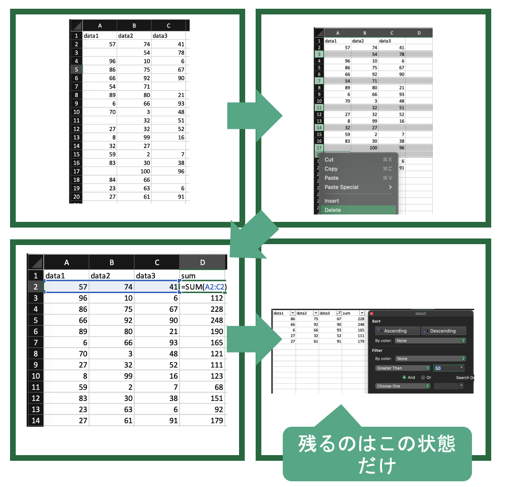

特別講義(データサイエンス)
Published on March 29, 2024 under the tag
1 注意,記法などについて
開く
特別講義(データサイエンス)の授業資料などを書いてく予定です. (現在執筆中)
本資料は,文系学部生向けにデータサイエンスを体験することを目的にしたものです. これまでにプログラミングや理数系科目を学習していないことを前提にしているので, 初歩の初歩から一つずつ扱う科目です.
こちらの資料では,授業に必要な技術的な内容に限定して掲載します. 授業概要,授業の注意点,成績等については講義中に別資料で説明します.
演習回答はこちら
1.1 デザインについて
文章中で色の変わっているブロックはオレンジ色が注意(warn),青色が演習や強調(note)など独立した部分を表しています. 講義ではwarnに関しては,飛ばす場合があるので,興味のある人は自分で読み進めてください.
これは注意や発展的内容を示しています.
これは演習や強調したい箇所に利用されています.
リンクはGoogleのように下線で表示されます.クリックすることでリンクに飛ぶことが可能です. 右クリックして,新しいタブで開くことを推奨しています.
1.2 シンタックスとコーディングスタイル
本講義ではプログラムブロックは以下のように黒い背景でシンタックスハイライトが適用されています.
import pandas as pd
print('Sample')コピー&ペーストが可能なので, 自分のプログラムに利用してください.
- Pythonのコーディングスタイルについて
Pythonの書き方は,基本的に可読性を高めるために,決まったルールで記載されます. このルールをコーディングスタイルといいます. Pythonにおける標準的なコーディングスタイルにはPEP8(Python Enhancement Proposal)などがありますが,本講義では一部従っていません.
特に,リストや辞書型などの改行において
コンマを改行後の先頭に記述する
ブランケットの終わりを改行した最後に記述する
といった記法を採用しています.これは,関数型言語(特にHaskell)の講義との対応関係を持たせるために筆者が好んでいるものですが, 一般的な手続き型言語のコーディングスタイルではありませんので注意してください.
また, リストなどをxsなどのsをつけた複数形で表現する命名規則も多用していますが,
こちらも一般的なコーディングスタイルではありません.
#通常の記法
animals = ['cat',
'dog',
'bird']
#本資料における記法
animals = ['cat'
,'dog'
,'bird'
]2 イントロダクション
開く
データサイエンスは,データを利用して現象を発見したり,予測をする科学の総称です. データの作成やデータを分析する前の処理,利用するコンピュータ関連の技術なども対象となります.
データサイエンスと関連の深い分野/用語として統計や機械学習,AIがありますが,それらもデータサイエンスの一部とみなすことができます.
統計は,データ自体の取得・作成・集計から,データの構造を分かりやすく分析・可視化する学問です.機械学習は,データから予測モデルを作り,意思決定などに応用する学問です. 統計や機械学習・AIは明確に分割することができるものではなく,かなりの部分が共通しています. 特に皆さんがこの講義の先修科目である統計学入門で学んだ,初歩的な統計は,機械学習やAI,データサイエンス全般を学ぶ上で,前提知識となります.この他,どちらかに分類できるわけではない,モデリング,AI,シミュレーション,最適化,次元削減,など様々なトピックが含まれています.

この講義では,統計学入門で学んだ,可視化,数値化,検定,回帰などの統計学の手法をPCを使って行う他,統計学入門の範囲を超えたより発展的な手法に関しても学習します.
しかし,このようにデータサイエンスは非常に広範な学問なので,統計学入門のように個別の手法に関して,細かく理解することはせず,それぞれの概要と利用方に関してのみを扱います.
2.1 プログラミング言語の種類
データサイエンスは言葉の通り,データを扱います. 現在ではデータは基本的に,電子データとして収集,処理されるため,それらの編集,処理にはコンピュータを利用し,操作は基本的にはプログラムによってなされます. したがってプログラミングは,データサイエンスのための前提知識となります.
この講義では最終的には,学生それぞれに研究のためのプログラムを組んでもらいます. データサイエンスや統計でよく使われる言語は, Python, Julia, R, SPSS, matlab などいくつかありますが, この授業では, 現在世界的に広く使われており,習得も容易なPythonを利用します.
プログラミング言語には沢山の種類がありますが,言語によって機能や得意なことが異なります.
プログラミング言語は 実行方式, 書き方,検査の仕方などの特徴がそれぞれ異なり,大まかにはそれぞれ以下のような意味になります.
実行方式
プログラミング言語は,人間にとって理解しやすくデータ構造やアルゴリズムを記述するための手段です.しかし,コンピュータはプログラミング言語を直接理解することはできません.そのため,書かれたプログラムはコンピュータが解釈できる形式,すなわち0と1のビット列である機械語に翻訳される必要があります.この翻訳プロセスは,プログラムの実行方式を以下の二つに分ける要因となります.
- インタプリタ方式
インタプリタ方式では,プログラムは逐次的に機械語に翻訳されながら実行されます.この方式の特徴は,コンパイルする必要がないため,翻訳と実行が同時に行われる点です.これにより,プログラムの変更がすぐに反映されるため,開発中のテストやデバッグが容易になります.しかし,実行のたびに翻訳を行う必要があるため,実行速度が遅くなることが欠点です.
- コンパイラ方式
コンパイラ方式では,プログラム全体が事前に機械語に翻訳され,その結果として得られる実行可能なプログラムが生成されます.コンパイラ方式の利点は,一度コンパイルされたプログラムは,何度も実行される際に追加の翻訳が不要であるため,実行速度が速いことです.また,コンパイル時にプログラム全体を分析できるため,エラーやバグの発見が早期に行え,より安全性が高まるという利点があります.
この二つの実行方式は,プログラムの性質や用途に応じて選択されます.インタプリタ方式は開発の柔軟性が求められる場合に適しており,コンパイラ方式は性能が重視される場合に好まれます.プログラマはこれらの特性を理解し,それぞれの場面で最適な選択をすることが求められます.
書き方
プログラミングとは,基本的にコンピュータに対して実行してほしい命令を記述する作業です.現在主流のプログラミング言語には,大まかに手続き型言語と関数型言語の二つの記述方法が存在します.
- 手続き型言語
この言語タイプでは,プログラムが｢何を,どうするか｣を順番に記述していきます. Python,Java,VBAなど多くの広く使われている言語がこの方法を採用しています. これにより,処理の流れが直観的に理解しやすくなります.
- 関数型言語
関数型言語では,プログラムを実行によってユーザーが得たい結果を抽象化し,関数の組み合わせで記述します.このアプローチは,安全性の向上やデバッグのしやすさといったメリットを提供しますが. 概念の抽象化により理解が難しくなることがあります.
近年では,手続き型言語にも関数型の構文が取り入れられるようになり,手続き型言語内で関数型風に記述することや,その逆も可能になっています.
これらの違いについて更に詳しく知りたい方は,別の講義資料で更に詳しく説明しています.
検査の仕方
プログラミングは,データ構造とアルゴリズムを使用して命令を記述する作業です.ここではデータ型の詳細に深くは触れませんが,あらゆるプログラミング言語において,データはコンピュータのメモリ上に数値の羅列として存在します.それらの数値に意味を与えることでデータ型が形成されます.
プログラムは実行時に,これらのデータ型が適切に使用されているかを検査します.主な検査方法には動的型付けと静的型付けがあります.動的型付けでは,プログラムの実行時にデータ型が決定され,静的型付けではコンパイル時にデータ型が固定されます.さらに,型付けには「弱い型付け」と「強い型付け」という区別も存在しますが,この講義ではその詳細には触れません.興味のある方は,このトピックについてさらに調査してみてください.
- 動的型付け 動的型付けのシステムでは,プログラマが変数の型を明示的に宣言する必要がありません.代わりに,コンピュータはプログラムの実行時に型を推論し,適切な型を自動で割り当てます.この柔軟性により,プログラマはより迅速に開発を進めることが可能になります.一方で,このシステムではコンパイル時の型チェックが行われないため,実行時に型関連のエラーが発生するリスクが高まります.そのため,安全性を確保するためには,プログラマ自身が型の整合性に注意を払い,エラー処理やテストにより問題を検出する必要があります.
- 静的型付け
静的型付けでは,プログラマが変数や関数の型をコード内で明示的に宣言し,これらはコンパイル時にチェックされます.この事前の型チェックにより,プログラムの安全性が向上し,実行時のエラーが減少します.また,コンパイラが型情報を利用して効率的なコード生成を行い,パフォーマンスが向上することがあります.静的型付けは特に,大規模プロジェクトや高い信頼性が求められる場合に適しています.
プログラミング言語は,このような区分や,それ以外の様々な機能によって,用途の向き不向きが決まります(大雑把な目安です).
ではこれらの特徴を踏まえて,Pythonとはどのような言語なのかを見てみましょう.
Pythonは
- インタプリタ型言語で
- 機械語に翻訳しながら動く
- 手軽に書けて手軽に試せる
- でも少し安全性が低く,遅い
- 手続き型言語で
- 次に何をするかを順番に書く
- (ただし関数型っぽい書き方もできる)
- 動的型付け言語で
- 型検査を動かしながら実施
- 動かしてから型が違うと失敗するこれらは,プログラミング言語の大きな分類からみたPythonですが, Python固有の特徴として以下のようなものがあります.
- とにかく読みやすく書きやすく覚えやすい
- ABC言語という教育用言語が元になっている
- 予約語が少ない, → 覚えることが少ない
- インデントでかき分け → 間違いが少ない
- だれが書いても同じになる(と言われてはいる)
- ライブラリが豊富
- 統計処理を全部0から自分で書くのは大変
- 他の人が作ったものを使えるようにするのがライブラリ
- 様々な大学や企業,研究者が膨大な量の統計処理,機械学習ライブラリを開発している
- 遅いけど,Cなどと連携しやすい.
- プログラミング言語ごとに速度は異なる.
- Pythonは結構遅いので大きな計算に時間がかかる.
- とても早い言語で遅い部分を書き換えやすい
- ライブラリは基本的に早くなっているPythonが教育用に良く使われるのは, インタプリタ方式の動的型付け言語であることから手軽に書けるだけではなく,もともと言語として簡単に書けるように作られていることが大きいです.
また, 統計,データサイエンス分野のライブラリが充実しており, これによって誰でも簡単に複雑な統計処理やデータサイエンスの技法が利用できることで,Pythonが広く普及しています.
簡単 → 教育用に → 多くの人が使う → ライブラリが充実 → もっと多くの人が使う
という流れがPythonの最大の強みと言えるでしょう.
実際にPythonはユーザー数が増え続けており,プログラムの共有サイトGitHubにおける2023年のすべての言語のなかで2番目にユーザ数が多い言語となっています. Top 10 Programming languages on GitHub
2.2 授業準備
この講義では,プログラムを自分で作成し,様々な演習をこなしてもらいますが,その前段階として,いくつかの準備が必要となります. このあたりはこの科目の先修科目の統計学入門でも扱っていますが,履修していない人もいますので,順番にやっていきましょう. 非常に基礎的な内容なので, 問題のない人は飛ばしましょう.
2.2.1 テキストエディタ
テキストエディタとは,プログラムを書くためのソフトウェアです. プログラムを書くことをコーディング(Coding)といいます.
テキストエディタには沢山の種類があり,それぞれ独自の機能を持っています. Windwosに最初から入っている｢メモ帳｣もテキストエディタですが,プログラムを書くために様々な機能が追加された高機能なテキストエディタも沢山あります.
例えば,シンタックスハイライト機能は,以下のプログラムのように,プログラムの記述を役割や意味に応じて色付けして見やすくしてくれます.
## シンタックスハイライト
from datetime import datetime
def greet_based_on_time():
now = datetime.now()
current_hour = now.hour
if 5 <= current_hour < 12:
greeting = "Good morning, world!"
elif 12 <= current_hour < 18:
greeting = "Good afternoon, world!"
else:
greeting = "Good night, world!"
return greeting
# 関数を呼び出して結果を表示
print(greet_based_on_time())また,スペースをタブに変換するなどの機能も非常に便利です. 最近では生成AIを利用した自動補完機能がついたエディタなどもありますが,本講義における生成AIの利用に関しては第2回でコードを書き始めた際に説明します.
今までメモ帳以外のテキストエディタを利用したことが無い方には,シンプルなSublime Text 3をおすすめします(今世界的に人気があるのは VSCodeです.非常に便利ですが機能が多すぎて皆さんが混乱する可能性があるので,こちらを選びました).
既に何かしらのテキストエディタを利用している方は,現在使用しているエディタをそのまま利用して頂いても構いません.
このURLをクリックして,ページ上部にあるDownloadをクリックします. 自分のPCに合わせたインストール方法を選択しましょう.
SublimeTextもいろいろな機能を追加することができます. ｢SublimeText 設定｣などで調べて,好きなようにカスタマイズして構い舞いません. カスタマイズをしなくても基本的な機能には問題ありません.
2.3 IMEの設定
プログラムは基本的に ｢半角英数字｣ で記述されます. プログラム中に全角の空白や記号が交じるとエラーの原因となる場合があります. そのため,プログラムを書く前に,そういったミスが起きないようにIMEの設定をしましょう.
タスクトレーからIMEの設定ができます．基本的に記号をすべて半角に設定しましょう（スペースは必ず半角にしましょう）．特に，句読点をコンマとピリオドに変更しましょう．

2.4 CLIの基本操作
プログラムの開発環境にはマウスなどでクリックして操作するGUI(Graphical User Interface)をもったIDE(Integrated Development Environment)などもありますが,基本的には文字によってコンピュータに命令を送るCLI(Command Line Interface)を利用します. 映画やマンガなどで,ハッカーが黒い画面に文字を打っているあれのことです.
コンピュータのオペレーティングシステムとユーザー間のCLIを提供するプログラムをShellといい,Windowsでは,Command PromptやPowerShellなどがあります. MacなどのUnix系では,Bashやzshがあります. いずれも (Windows) Terminalというソフトウェアを介して利用します.
本講義では環境や好みによって好きな環境で開発して構いませんが,ここでは,PowerShellの利用法を解説します.
Windows11の検索バーで Terminalと検索して,出てきた Terminalをクリックしましょう.
自動的にWindows PowerShellが起動します. 立ち上がった,黒色の画面に文字でコマンド(命令)を入力して,コンピュータを操作します.
2.4.1 エンコーディング
実際にコマンドを入力する前に, 初心者がつまづきやすいポイントとして,Windowsのエンコーディングについて解説します.
PCは人間の使う文字（日本語，英語など）が理解できません.PCは機械語と呼ばれる言語で命令を受け付けます.一方で,人間は機械語を読むのが困難です.そこで,人間の使う文字と,機械語の間に変換ルールを設けて人間の文字でされた命令をPCにわかる文字に変換します.この変換ルールを文字エンコーディングと呼びます.
エンコーディングには複数の種類があります(日本語設定のWindowsはShift-JIS,Unix系はUnicodeが一般的です). PythonはUTF-8という文字エンコーディングがデフォルトなので,Windowsにおいても可能な限りUTF-8を用いた方が良いです.
そこで,ターミナル上で利用するエンコーディングを変更します.
PowerShellを起動して, chcp 65001 と打ち込み, PowerShell上で利用する文字エンコーディングをUTF-8に変更しましょう. chcpが利用する文字コードを変更するコマンド(change code page)で,その後に変更したい文字コードを入力します. 65001はUTF-8のコードページ(Windows独自の文字エンコーディング)です. これはPowerShellを起動する度に行ってください．
chcp 65001と入力すると,
Active code page: 65001
PS C:\Users\user>のように表示されるはずです.
2.4.2 日本語表示
Power Shellの設定によっては日本語が表示されず,日本語部分が □ で置き換えられて表示されます.これは,使用しているフォントに日本語が含まれていないために発生します.

設定を変更してて日本語を表示可能にしましょう( 適当な日本語を入力してみて,問題なく表示されるようであれば,変更は必要ありません).
左上の下向きの矢印 > 既定値 > 外観 > フォントフェイスの部分を日本語フォントに変更し保存をクリックすることで,日本語が表示されるようになります.
その他色やサイズなど,好きな設定に変更できます. あとで,好みにカスタマイズしましょう.
2.4.3 ディレクトリ
基礎的なコマンドを学ぶ前に,ディレクトリに関して理解しておきましょう. コンピュータの中のデータは,以下のような木構造になっています. このような木構造によるファイルの構造をディレクトリといいます.
C: -- Users -- hoge
|
-- hoge2 -- Desktop
|
-- Downloads
|
-- Documents -- huga
|
-- huga2CLIにおいて,ユーザはこの木構造のどこかに存在しており,この木構造を移動しながら様々な作業を行います. 現在いるディレクトリのことを working directory(以下wd)やcurrent directoryといいます.
2.5 基礎的なコマンド
ここでは, この講義で必要となる最低限のコマンド,特にディレクトリの移動に関するコマンドを学習します.
wdは, CLIの左側に表示されていることが多いです.
PS C:/Users/hoge2>のように表示されていれば今C:ドライブ下のUsers下のhoge2がwdとなります.
Windowsでは,ディレクトリを区切る文字が
¥あるいは\で表示されていると思います.Macでは,
/です.
本資料では,¥を表示するのが ダルい 技術的に難しいので/を利用しています. 自分の環境に併せて適宜読み替えてください.
CLIの左側に表示されていない場合にもpwdコマンド (print working directory)を入力すると,現在のディレクトリが表示されます.
PS C:/Users/hoge2> pwd
PATH
----
C:/Users/hoge2wdの下に何があるかを調べるコマンドとしてlsコマンド(list)があります.
以下, PS C:\Users\hoge2の部分は省略します.
> ls
Desktop
Downloads
Documents※実際の画面では,もう少しいろいろな情報が書かれているかと思います.
wdから別のディレクトリに移動するコマンドとして cd コマンド(change directory)があります
cd [移動先] と打つことで,lsコマンドで出てきた,ディレクトリに移動することができます.
> ls
Desktop
Downloads
Documents
> cd Documents
> pwd
PS C:/Users/hoge2/Documents移動先のディレクトリ名はすべて自分で入力する必要はありません. 最初の数文字を入力してTab Keyを押すと,自動で保管してくれます.
cd .. と打つと一つ前のディレクトリ,cd ~と打つとホームディレクトリ(基本的には最初に開いた際にいた場所)に一挙に移動することができます.
> pwd
PS C:/Users/hoge2/Documents
> cd ..
> pwd
PS C:/Users/hoge2
> cd Documents/huga
> pwd
PS C:/Users/hoge2/huga
> cd ~
> pwd
PS C:/Users/hoge2mkdir [作りたいディレクトリ名] コマンド(make directory)で,新しいディレクトリを作成できます.
rmdir [消したいディレクトリ名] コマンド(remove directory)で,ディレクトリを消すことができます.
> pwd
PS C:/Users/hoge2
> ls
Desktop
Downloads
Documents
> cd Documents
> ls
huga
huga2
> mkdir huga3
> ls
huga
huga2
huga3
> rmdir huga3
> ls
huga
huga2rmdir コマンドでは中身のあるディレクトリは消せません. オプションを追加することで消せますが,危険なのでここでは教えません.興味があったら自分で調べてみましょう.
練習:作業用ディレクトリを作ろう
これから,作業をするためのディレクトリをコマンドで作成しましょう.
- Documentsに移動
- Programs というディレクトリを作成し移動
- Python というディレクトリを作成し移動
- slds というディレクトリを作成し移動 (名前は好きに設定して良いです. slds; special lecture data science)
これからこの講義で利用するプログラムなどはsldsに保存しましょう.
2.6 環境構築
自身の環境(PC)でプログラムが動くようにすることを環境構築といいます. Python自分のPCで動くように設定をしましょう.
Pythonの環境構築に関して説明します.Pythonを動かす方法は沢山あります.一つのソフトの中でプログラムの編集から実行まで全て完結するIDE(統合開発環境)やブラウザ上で実行する方法もありますが,ここではCLIを利用して実行する方法を準備します.Windowsを所有している学生が多いと思われるので,Windowsを前提に説明します. それ以外のOSの方は分からなければ教員に聞いて下さい.
- pythonの環境
現在のPythonの開発環境は, pyenvやDockerを利用した仮想環境でpythonのversionやライブラリをアプリケーションごとに分ける方法が主流です.
ただし,本資料では複数のアプリケーションを設定すると手順が煩雑になり,環境変数の設定など作業量が多くなるため扱いません.興味がある方は,調べて自分で導入してみましょう.
特にMacユーザーは,以下の手順で公式サイトのインストーラーを利用した場合,新しいversionのpythonを導入する際に苦労することになるかと思います. もし,自分で環境を再構築して上手く以下なかった場合は,教員に聞いてみましょう.
Pythonの公式サイトからPythonをダウンロードしましょう.
Windows → 最新の一つ前のバージョンの Windows installer (64-bit) をクリック
最新版を入れたいところですが,最新のVersionは色々と不具合が起きる可能性があるので,上から1つ目のVersionにしておきましょう.ここでは最新が3.12.2なので,3.11台のバージョンを入れます.(バージョンの数字は,サイトを開いた時期によって変わります.)
ダウンロードした Python-3.11.8.exeをクリックするとウィンドウが開きます. 指示に従ってインストールしましょう．
注意点
開いたWindowで
Insatall launcher for all users(recommended)Add Python 11.8 to PATH
というチェックボックスが出てきたら,それらにチェックを入れてから次に進みましょう.
この画面もVersionなどによって変わるため,分からなければ教員に聞いて下さい.

インストールが終わったら 新しくPowerShellを開いて python --version と入力しましょう.
Macの人は python3 --version とコマンドが変わりますので注意してください. Macの人は以降,python コマンドはすべて python3 コマンドに読み替えてください.
install したversionのPythonが表示されれば無事インストールされています.
> python --version
Python 3.11.82.7 Hello World
初めて作成するプログラムとして標準出力(PowerShellなどの画面)にHello Worldと出力するだけのプログラムを作成してみます.
PowerShellを開いて,自分の作業用ディレクトリに移動します.
> chcp 65001
> cd Documents/Programs/Python/sldsテキストエディタで新しいファイルを開き,作業用ディレクトリにhello.pyという名前で保存しましょう.
.pyはPythonプログラムの拡張子です.
保存は,タブからFile > save with encoding > UTF-8の順にクリックしUTF-8で保存しましょう.
それ以降は Ctrl + sなどで上書き保存しても構いません.
作成したディレクトリに移動し, lsコマンドでファイルがあるか確認しましょう. ょう.
> ls
hello.py確認できたらhello.pyに以下の2行を書き足して上書き保存します.
# -*- coding:utf-8 -*-
print(“Hello world!”)保存できたらpython hello.pyコマンドでプログラムを実行します.
(Macの人は python3 hello.pyです.)
標準出力にHello World!と表示されれば成功です.
> python hello.py
Hello World!ここまでで，皆さんはPCでプログラムを書く準備が整いました． あとはプログラムの書き方を学習すれば自身の環境で開発が行なえます．
2.8 プログラミングの勉強の仕方
プログラミング言語は,文字通り言語です. 英語などと同じ様に,使わないと身につきません.なので,大事なことは勉強するより使うことです.
英語の勉強で,一つひとつ文法を覚えることは大切かもしれませんが,実際に英文を書いたり,会話しないと使えるようにはなりません. プログラミングの学習で,学習用の資料や教科書を一つ一つ読んだり,ノートに書き写す人がたまにいますが,かなり効率が悪い方法です. 何も分からなくてもいいので,取り敢えずプログラムを書いて実行するようにしましょう. 資料に載っている例はすべて,実際に書いて実行してみましょう.
一番いい方法は,何も分からなくても取り敢えず,プログラムをつかってしてみたいことを実行することです.1からすべての構文などを覚えようとしないで,自分がやりたい,しなければならないことを,書き始めましょう. 分からないところだけを調べれば十分です.
その際に,新しく知ったことは,メモなどして,あとで参照できるようにしておきましょう. その資料が後々役に立ちます.
プログラミングは,すべて暗記する必要はありません. 覚えていなくても,それの調べ方や載っている資料を知っていれば十分です. 何回も使う機能であれば自然に覚えます.
ただし, Pythonは非常に多くの人が利用しているので,みなさんがこの講義で習うレベルのことは検索すれば既に,完成したプログラムを参考にすることができます. また,ChatGPTなどの生成AIを利用すれば,皆さんの書いたプログラムよりかなりできの良いものをすぐに得ることができます. それらを見て勉強することは大切ですが,ただ,只管コピペしたり,生成AIの結果を利用しているだけでは,全く身につきません. 検索して出てきたコードや,生成AIによるコードを利用しても構いませんが, それをただ貼り付けるのではなく,自分で読んで,理解するようにしましょう.
知らない部分,自分では書けない部分が見つかったらそれを理解するように勉強しましょう. ChatGPTに質問しても構いません. ただ,聞いたことを説明できるようにしましょう.
自分で説明できないものを使えるのはせいぜい学校の課題くらいです. 仕事や研究では,中身の良く分からないコードは利用できません. 最低限自分で理解したものだけを利用してください.
講義では,結果があっていればよいだけではなく,なぜそのように書いたのか,どのような意味か,なぜこうなるのかなどを皆さんに聞きますので,理解に務めるようにしましょう.
演習
- 演習1 Shellコマンドの調査
今回ならったいくつかのコマンド以外にも便利なコマンドが沢山あります. 3つ調べて,使い方を説明してください.
- 演習2 チートシートの作成
チートシートとは「それだけを見れば必要な情報が分かるメモ書き」のことです. プログラミングの学習では, 自分でノートを取って,それさえ見ればなんとかできる資料を作る のは非常に有用です.
.pptでも.txtでも形態は何でも良いので, 自分だけのチートシートを作成して, 今日覚えたこと,調べたことなどをメモしていきましょう.
◦ CLI, Pythonの基礎, Pandasなど学習の区切りごとにシートを分けると便利です.
◦ スライドサイズを事前に大きく設定しておくと便利です
書き方は自由ですが, 検索して有名なチートシートを参考にしてください.
このチートシートは後で紹介してもらいます.
- 演習3
print()の利用
今回作成したhello.pyにおける
print() という関数は()内の文字(""で囲われている部分)を標準出力する関数です.
print()の括弧内の Hello World! 部分を好きな文字に書き換えて実行してみましょう.
演習について
この資料では,所々に演習が指定されています. 演習は自分で行い, どのようにやったのかを講義中に発表,あるいは宿題として提出してもらいます.
家で演習を進めた場合には,講義中にそれが再現できるように,
- どのようにやったのか
- なぜやったのか
などを人に説明できるように必ず作成したメモ,資料などを残しておきましょう.
3 Pythonことはじめ
開く
第2回では,Pythonの基礎の基礎を学習します. 本講義はプログラミング自体の学習を対象としているわけではないので, 講義内で必要な技能を紹介するのみに留めます.
基本的には,公式のPythonチュートリアルの内容で必要十分ですので,そちらにそって学習を進めます. より詳しい内容を勉強したい場合には,プログラミングの講義を履修するか, 千葉商科大学IEEESB などに参加するのが良いかと思います.
今回は取り敢えず,以下の作業を自分で行いながら,Pythonの体験をしてみましょう.
3.1 REPLを使ってみよう
プログラムの対話環境全般をREPL (Read Eval Print Loop)と呼びます. 長いプログラム(スクリプト)を書かなくても対話的にプログラムを実行することができます.
Pythonには複数のREPLがあり,iPython, jupyternotebook, Google Colaboratoryなどがあります.ここではとりあえず,iPythonを利用します. 他のものについても,後ほど出てきます.
CLI(PowerShellやTerminal)を開いて,python(Mac の人はPython3)とだけ打ってEnter Keyを入力するとPythonのREPLが立ち上がります.
~/Desktop
python3
Python 3.10.11 (v3.10.11:7d4cc5aa85, Apr 4 2023, 19:05:19) [Clang 13.0.0 (clang-1300.0.29.30)] on darwin
Type "help", "copyright", "credits" or "license" for more information.
>>>プログラムを書いてEnter Keyを押すとその行のプログラムが実行されます.
>>> 1 + 1
2終了するには,exit()と入力します.
~/Desktop 1m 7s
Python 3.10.11 (v3.10.11:7d4cc5aa85, Apr 4 2023, 19:05:19) [Clang 13.0.0 (clang-1300.0.29.30)] on darwin
Type "help", "copyright", "credits" or "license" for more information.
>>> 1 + 1
2
>>> exit()
~/Desktop 1m 7s3.2 コメントアウト
REPL上でもスクリプトでも,#を先頭につけると,その行はコメントとして扱われます.
ただのコメントであり,プログラムとしては何も実行されません.
>>> # これはコメント何も起きない
>>>3.3 データ型
第1回の検査に関する説明で軽く触れましたが, プログラミングで扱うデータはコンピュータのメモリ上に数値の羅列として存在します. それらの数値に人間が解釈可能な意味を与えたものをデータ型といいます.
Pythonで最初から準備されているデータ型(組み込み型)には以下のようなものがあります. 詳細はこのあと順番に見ていきますので, こんなものがあるということだけ,頭に入れておきましょう.
Pythonのデータ型(一部)
数値型:数値を表す
- 整数(
int) - 浮動小数点数(
float) - 複素数(
complex)
- 整数(
文字列型(
str):文字を表すリスト(
list):いくつかのデータをまとめたものタプル(
tuple):データの組み合わせ辞書型(
dict):keyとvalueからなる辞書を表す真偽値(
bool):正しいか正しくないかなどを表す
3.3.1 数値型(Pythonを電卓として使う)
REPLの動きに慣れるために,電卓で行うような簡単な計算をREPL上で行いましょう.
電卓で行う計算なので,ここで扱うデータ型は数値型になります.
Pythonは,における数値型には整数を表すint,小数を表すfloat,複素数を表すcomplexがあります. 本資料では,その内intとfloatについて扱います.
基本的には1や100のような整数を書けばint型として認識され,1.0や100.3のように小数点をつけるとfloat型として認識されます.
>>> 1
1
>>> 1.0
1.0Pythonではtype()の丸括弧の中にデータを記述することで特定のデータのデータ型を確認することができます.
>>> type(1)
<class 'int'>
>>> type(1.0)
<class 'float'>整数や後述の文字など変換可能なデータ型から,int型へ変換するにはint()の中に,そのデータを書きます. float型に変換するには,float()を使います.intからfloatへの変換では,小数点以下が切り捨てられます.
>>> int(4.9)
4
>>> float(2)
2.0
>>> float("2")
2.0Pythonでは複数の数値型が混ざった計算に対応しています. 基本的に,特定の計算で複数の数値型が混じっている場合には, int型はfloat型に,float型はcomplex型に自動で拡張されるので本講義の範囲ではそれほど意識する必要はありません.
簡単な計算に用いる記号は以下のとおりです.
| 計算 | 記号 |
|---|---|
| 足し算 | + |
| 引き算 | - |
| 掛け算 | * |
| 割り算 | / |
| 整数除算 | // |
| 剰余(余り) | % |
| 累乗 | ** |
| 絶対値 | abs() |
| 整数変換 | int() |
| 小数変換 | float() |
実際の計算は以下のようになるはずです.
計算は普通の電卓と同じような感覚で使えます.
>>> # 足し算
>>> 1 + 1
2
>>> # 引き算
>>> 10 - 5
5
>>> # 掛け算
>>> 2 * 3
6
>>> # 割り算
>>> 100 / 5
20.0計算には順序があり丸括弧 ()で囲うことで計算する順番を変えることができます.
>>> (50 - 5 * 6) / 4
5.0
>>> 50 - 5 * 6 / 4
42.5マイナスの数は数値の前に-をつけます
>>> 10 + -5
5割り算の商と余りは//や,%で計算できます.
>>> # 整数除算(余りを表示しない)
>>> 6 // 4
>>> 1.0
>>> # 剰余(余り)
>>> 17 % 3
2
>>> 5 * 3 + 2
17同じ数字をX回掛けたものを累乗といい,**といいます. 2 ** 3 = 2 * 2 * 2
>>> # 累乗
>>> 2 ** 2
4
>>> 2 ** 3
8abs() の中に数値を入れることで絶対値が計算できます
>>> abs(4)
4
>>> abs(-4)
4演習
以下の計算をREPLを使って自分でしてみましょう. Pythonの計算になれることが目的ですので,どのように計算したかを説明できるようにしましょう.
飴が40個あります.7人で同じ数ずつ分けると1人分は何個で何個あまりますか?
底辺5cm,高さ4cmの三角形の面積はいくつですか?
2の8乗はいくつですか?
累乗と掛け算の計算順序を丸括弧を使った計算で確かめてください.
3.4 変数と代入
値に名前をつけることを代入といい,名前のついた値を変数といいます. = の左側に付けたい名前,右側に値を書きます.
プログラムでは,データはコンピュータの記憶領域(メモリ)に格納されています. メモリは,1バイト(8bit, 1bit は0/1の値)ごとにアドレスという連番がついています.

>>> x = 10変数を宣言するということは,このアドレスにデータを割り当てることを意味します.
x = 10という変数が4バイト利用するとしたら以下のようにアドレス 201 から204 に 10という数字(int)を割り当てるイメージです.
xのアドレスはid(x)で確認できます.
>>> id(x)
4438639120y = x と変数に別の名前を宣言する場合は,同じ場所が参照されます.
>>> y = x
>>> id(x)
4438639120
>>> id(y)
4438639120
x=15と再度代入する(再代入)と,新しくメモリが確保されます.
その際に,xをコピーしていたyの値も変わることに注意しましょう.
>>> x = 15
>>> id(x)
4438639280
>>> id(y)
4438639280
数値の場合にはyに再代入しても,xの値は変わりません.
>>> x = 10
>>> y = x
>>> id(x)
4438639120
>>> id(y)
4438639120
>>> y = 15
>>> y
15
>>> x
10
>>> id(x)
4438639120
>>> id(y)
4438639280この挙動は,後に出てくる配列では,異なるので注意が必要です.
変数に名前をつける際には,以下の点に注意しましょう.
小文字で始まる英数字を使う
複数の単語を使うときは
_(アンダーバー)でつなげる英語で名前をつける
nagasaではなくlengthnamaeではなくname
長くなっても良いので他の人が見たときに意味がわかる名前をつける
- 三角形の高さを表したいとして
xやhなどの一文字よりもheightのほうが良い- 他にも高さを表す変数が登場するなら
triangle_heightのほうがより分かりやすい
- 三角形の高さを表したいとして
>>> # 長方形の面積を求める
>>> width = 20
>>> height = 5
>>> area = width * height
>>> area
900
>>> #定義されていないものはエラーがでます
>>> space
Traceback (most recent call last):
File "<stdin>", line 1, in <module>
NameError: name 'space' is not defined演習
- 変数を利用して以下の猫型ロボットのBMIを計算してください
- BMI = 体重(kg)÷身長(m)の2乗
- 猫型ロボットの身長 129.3cm
- 猫型ロボットの体重 129.3kg
3.4.1 代入演算子
代入は=でつなげる以外にもいくつかのパターンがあります.
まずは,普通に変数に数値を代入してみます.
>>> x = 1
>>> x
1
>>> x = 2
>>> x
2このように具体的な値を=の右側に記入するのは直感的に分かりやすいのですが,pythonのプログラムを見ていると,左右に同じ変数名が登場する場合があります.
>>> x = 1
>>> x = x + 1
>>> x
2これは,右側に登場するxは過去のxを表しており,左側に登場するxは,過去のxを利用して作られた新しいxであると解釈しましょう.
上の例では,x=1という過去の変数を使って, x(=1) + 1という新しいxを作っています.
これは自己代入と呼ばれ,数学や関数型言語における再帰とは異なり,手続き型言語独特の記法なので注意しましょう.
足し算+を使った自己代入は省略して, x += 1のように書けます. これは x = x + 1の省略形で複合代入演算子といいます.
同様に,引き算-=,掛け算 *=, 割り算 /=などの代入演算子も存在します.
>>> x = 10
>>> x -= 5
>>> x
5
>>> x *= 5
>>> x
25
>>> x /= 5
>>> x
53.5 文字列型
ここまでは,数値のみを扱ってきましたが,Pythonには数値以外にもいくつものデータ型が存在します.
次に, 文字を表す文字列型(str)の利用法について見ていきましょう.
文字列型は,文字を""(ダブルクオーテーション),あるいは''(シングルクォーテーション)で囲みます.
>>> "イヌ"
'イヌ'
>>> 'ネコ'
'ネコ'
>>> type('ネコ')
<class 'str'>三連引用符"""で囲むことで複数行書くことができます.
>>> """ あ
... い
... う"""
'あ\nい\nう'\nは改行を表しています.
>>> print('あ\nい\nう')
あ
い
う3.5.1 文字列の演算
文字列は+で連結,*で反復させることができます.
>>> name = '太郎'
>>> '私は' + name + 'です!'
'私は太郎です!'
>>> name * 3
'太郎太郎太郎'変数を文字列の中で使いたいときには,上の例のように+で連結することもできますが,変数が文字列型ではないときには,str()を利用して文字列型に変換してから,結合する必要があります.
>>> cat_num = 10
>>> type(cat_num)
<class 'int'>
>>> #そのまま文字列と結合するとエラーが出る
>>> '私はネコを' + cat_num + '匹飼っています.'
Traceback (most recent call last):
File "<stdin>", line 1, in <module>
TypeError: can only concatenate str (not "int") to str
>>> #str()を利用して文字列に変換する
>>> '私はネコを' + str(cat_num) + '匹飼っています.'
'私はネコを10匹飼っています.'また,変数の値を文字列の中で利用する場合にはstr()や+を利用して結合する以外にもf'文字列'という記法を利用することができます.文字列の前にfと書くと,文字列内の{変数名}の部分が変数の値に変更されます.
>>> f'私はネコを{cat_num}匹飼っています.'
'私はネコを10匹飼っています.'{変数名}の部分には式を入れることも可能です.
>>> f'私はネコを{cat_num*10}匹飼っています.'
'私はネコを100匹飼っています.'文字列が代入された変数の後ろに[]をつけて,番号を[]の中に入れると,指定した番号番目の文字が取得できます. このような[]で指定する数字をindexといいます.
Pythonという文字に対して,indexは以下のように振られています.
-をつけて後ろから数えることもできます.
| 文字列 | P | y | t | h | o | n |
|---|---|---|---|---|---|---|
| 前から | 0 | 1 | 2 | 3 | 4 | 5 |
| 後ろから | -6 | -5 | -4 | -3 | -2 | -1 |
Pythonの文字列は,最初の文字を0番目と数えるので注意しましょう.
>>> word = 'Python'
>>> word[0]
'P'
>>> word[5]
'n'
>> word[-6]
'p'インデックスの[]の中で,[Start:End]のようにはじめと終わりのインデックスを指定することで,文字列の1文字ではなく,部分的な文字列を取得することもできます. これをスライスといいます.
終わりは,一つ手前までになるので注意しましょう.
>>> word[0:2]
'Py'
>>> word[2:5]
'tho'はじめか終わりのインデックスを省略すると,以降全てという意味になります.
>>> word[:4] #0から4まで
'Pyth'
>>> word[2:] #2から最後まで
'thon'演習
- 演習1
'abcdefg' から 'cde'をスライスで抜き出してください.
- 演習2
x = 'abcdefg'と定義して, xに操作を加えて'abfg'を作ってください.
- 演習3
x = 'abcdefg'と定義して, xに操作を加えて'bbbeee'を作ってください.
3.6 リスト
複数の値をまとめるデータ型の一種にリスト型があります. コンマで区切って角括弧の中に複数の値を書くことで,ひとまとまりのデータを作れます. リストの中身一つ一つを要素といいます.
>>> squares = [1,4,9,16,25]
>>> squares
[1,4,9,16,25]リストは文字列と同じ様に,インデックスやスライスで要素を取得できます.
>>> squares[0]
1
>>> squares[-1]
25
>>> squares[-3:]
[9,16,25]3.6.1 リストの演算
リストも+で連結,*で反復させることができます.
>>> [1,2,3] + [4,5,6]
[1,2,3,4,5,6]
>>> [1] * 3
[1,1,1]
>>> [1,2] * 3
[1,2,1,2,1,2]リストはインデックスやスライスで指定した要素に値を再代入して変更することができます.
>>> animals = ['cat','dog','bird']
>>> animals[1] = 'mouse'
>>> animals
['cat','mouse','bird']
>>> animals[1:] = ['fish','pig']
>>> animals
['cat','fish','pig']リストは,数値などとは変数に別の名前をつけたときの挙動が異なるので注意が必要です.
数値や文字列は,別の名前をつけた変数に再代入した場合もとの変数は,変更されません.
>>> cat = 'cat'
>>> cute_cat = cat
>>> cute_cat = 'cute_cat'
>>> cat
'cat'
>>> cute_cat
'cute_cat'cute_catを変更してもcatは変わりません. 代入の説明箇所で見たように,数値などの変数の場合は,cute_catにはcatの値が渡されており,値が同じ場合には同じアドレスを参照するが,値が変更された場合には,
新しいメモリが確保されます.
しかし,リストは別名の変数を変更すると元の変数の値も変更されます.
>>> animals = ['cat','fish','pig']
>>> species = animals
>>> species[0] = 'horse'
>>> animals
['horse', 'fish', 'pig']
>>> species
['horse', 'fish', 'pig']animalの別名speciesを変更するとanimalも変更されています. これは,配列などは新しい名称の変数に,値ではなくアドレスを渡していることによります.どちらの変数もずっと同じアドレスを参照しつづけるため,片方が変化すると同じアドレスを参照しているもう片方の値も変わります.
>>> id(animals)
4441753024
>>> id(species)
4441753024
>>> species[0] = 'cat'
>>> id(species)
4441753024しかし,インデックスやスライスによる要素の変更ではなく,全体を再代入した場合には新しいアドレスが割り当てられます.
>>> species = ['a','b','c']
>>> id(species)
4441834752同じ値を持つが異なる場所を参照するリストを作りたい場合には,copy()を利用します.
>>> animals = ['cat','fish','pig']
>>> species = animals.copy()
>>> id(animals)
4441764160
>>> id(species)
4441798208
>>> species[0] = 'dog'
>>> animals
['cat', 'fish', 'pig']
>>> species
['dog', 'fish', 'pig']このような挙動は今後出てくるpandasなどの配列でも同様なので,注意が必要です.
append()というメソッドを使って,リストの末尾に要素を追加することができます.
>>> animals
['cat','fish','pig']
>>> animals.append('dog')
>>> animals
['cat','fish','pig','dog']リストの長さ(要素数)を知りたい場合には,len()関数を利用します.
>>> animals
['cat','fish','pig','dog']
>>> len(animals)
4メソッド,関数という言葉が説明無しに突然でてきました.
これらの違いについて理解するには段階が必要なため,後に説明します.
ここでは,変数などの後ろに変数.f()の形で.を利用してつけるものをメソッド,単独でf()のように利用するものを関数ということだけ覚えておきましょう.
なお,いずれも()の中に値や変数を書いたり書かなかったりしますが,その意味についても後ほど扱います.
リストはリストも要素にすることができます. このようなリストを多重リストと呼びます.
>>> x = [1,2,3]
>>> y = [4,5,6]
>>> z = [x,y]
>>> z
[[1,2,3],[4,5,6]]
>>> z[1]
[4,5,6]
>>> z[0][1]
2演習
xs = [[1,2,3],[4,5,6],[7,8,9]] というリストを作り,以下の操作を行ってください.
xsの長さを求めるスライスを使って以下を抽出する
[[4,5,6],[7,8,9]][[1,2,3]][[7,8,9]][8,9]
[4,5,6]を[-4,-5,-6]に更新する1を-1に,9を-9にする[7,8,-9]のあとに,[10,11,12]を追加する
3.7 タプル
Pythonにはリスト以外にも複数のデータ型の組み合わせを表すデータ型が存在します. タプルは,データの組を表すデータ型であり,()の中に,で区切ってデータを入れることでリストのようにデータを格納することができます.
タプルも複数のデータをまとめることができます.
しかし, リストのように扱うことは推奨されません. (後に扱う関数などで返り値を複数返したいときなど)基本的に2,3個のデータの組を扱いたい場合に利用して,3個以上のデータを扱い場合にはリストなどを使うようにしましょう.
>>> name_and_age = ('Taro',10)
>>> name_and_age
('Taro', 10)タプルの値の取り出しには,同じ形のタプルに変数を格納することで値を取り出すパターンマッチが良く利用されます.
>>> (name,age) = name_and_age
>>> name
'Taro'
>>> age
10インデックスによる値の取得も可能です.
>>> name_and_age[0]
'Taro'
>>> name_and_age[1]
10ただし,インデックスを利用した要素の変更はできません.
>>> name_and_age[0] = 'Hanako'
Traceback (most recent call last):
File "<stdin>", line 1, in <module>
TypeError: 'tuple' object does not support item assignment3.8 辞書型
名前とその意味, 商品と在庫数,日本語名と英語名など,特定のデータに対応する別のデータの組み合わせを沢山扱いたい場合には,辞書型(dict)が利用されます. 辞書型はkeyとvalueと呼ばれるデータの組み合わせからなります.
辞書型のデータは,{key1:value1,key2:value2,...}のように,keyとvalueの組み合わせを:で表して,{}にコンマで区切るかたちで作成します.
例えば, 学生と学生の出席回数の組み合わせを表すデータは以下のように作成されます.
>>> attendance = {'Taro':10,'Hanako':12,'Kenta':9,'Shizuka':10}
>>> attendance
{'Taro': 10, 'Hanako': 12, 'Kenta': 9, 'Shizuka': 10}dict()にkeyとvalueのタプルのリストを渡すことで生成する事もできます.
>>> attendance = dict([('Taro',10),('Hanako',12),('Kenta',9)])
>>> attendance
{'Taro': 10, 'Hanako': 12, 'Kenta': 9}特定のkeyでそれに対応するvalueを呼び出すには,keyをインデックスとして[]を利用します.
>>> attendance['Taro']
10
>>> attendance['Shizuka']
10新しいkey:valueを加える場合にも,valueを変更する場合にも,インデックスによる代入が利用できます.
>>> attendance['Taro'] = 11
>>> attendance['Taro']
11
>>> attendance['Shinzi'] = 12
>>> attendance['Shinzi']
12keyを削除するにはpop(消したいkey)メソッドを利用します.
>>> attendance.pop('Hanako')
>>> attendance
{'Taro': 11, 'Kenta': 9, 'Shizuka': 10, 'Shinzi': 12}辞書型のデータから,keyのみ,valueのみを抜き出すには,keys(),values()メソッドを利用します.
リストとして取得したい場合には,list()関数で囲みます.
>>> attendance.keys()
dict_keys(['Taro', 'Kenta', 'Shizuka', 'Shinzi'])
>>> attendance.values()
dict_values([11, 9, 10, 12])
>>> list(attendance.values())
[11, 9, 10, 12]これらの処理はリストを利用しても可能ですが,辞書型のほうが計算が速いため辞書型を利用するようにしましょう. プログラミングにおいては用途に応じて適切なデータ型を選択することが重要です.
同じような処理が可能なデータ型でも,その処理を実行するのにコンピュータが必要な計算の数や,使用するメモリの量,速度などに違いがあります.
この資料では扱いませんが,大規模なデータを扱う場合や,大量の計算を行うプログラムを書く際には,計算量を考慮してアルゴリズムとデータ構造を適切に設計する必要があります. 興味のある方は,調べてみましょう.
演習
5種類の果物の日本語名と英語名を変換する辞書を作成し,実際に機能する様子を紹介してください.
上で作成した辞書にもう一つ果物を追加してください.
3.9 論理演算
それが正しいか間違っているか判別できる文を命題といいます. 命題の結果を表すものとして真(正しい),偽(間違っている)という値を用います. 真と偽を併せて真偽値といいます.
例えば,1は2より大きいという命題は,間違っているので偽となります. 人間は必ず死ぬという命題は,今のところ不老不死の人間がいないので真です.
プログラミングではこのような命題の判断がしばしば必要となるため,それらを扱うデータ型が提供されています.
真偽値を表すデータ型としてBoolがあります. BoolはTrue(真),False(偽)のいずれかです.
Pythonには命題の判定を行う演算子として,以下のようなものが準備されています.
| 記号 | 意味 |
|---|---|
> |
より大きい |
>= |
以上 |
< |
より小さい |
<= |
以下 |
== |
等しい |
!= |
等しくない |
in |
含む |
数値などの大小関係を調べるときには,比較演算子 >,>=.<,<=を利用します. 演算子の左右に数値を書くと,結果に応じて真偽値が帰ってきます.
>>> 1 > 2
False
>>> 1 < 1.5
Trueリストや文字列に特定の要素(文字列)が含まれているかは,inで判定できます.
>>> 'ab' in 'abcd'
True
>>> 1 in [3,4,5]
False値が等しいか/等しくないかを判定するには,==と!=を利用します.
>>> 4 == 4
True
>>> 'cat' != 'cat'
Falseこれ以外にもPythonにはいくつかの演算が準備されていますし,自分で作ることも可能です.
True や FalseなどのBool値は, AND(かつ),OR(または),NOTという演算で計算することができます(XORというのもあるが省略).
PythonではAND は &, OR は |, NOT は not という演算子が提供されています.
A,Bが命題だとして,A & Bは両方Trueのときに,Trueとなります. A | Bは片方どちらかがTrueのときにTrueとなります.
例えば,
1は2より大きい かつ 2は0より大きいという命題は,2は0より大きいは正しいですが,1は2より大きいが間違っているので全体として,Falseです.ネコは哺乳類である または ネコは鳥類であるという命題はネコは鳥類であるが間違っていますが全体としてはTrueです.
演算の結果は,それぞれ以下のようになります. これを真偽値表といいます. ここでは,最低限の例だけを紹介しますが,より深く理解したい人は論理学などの講義を受講しましょう.
| 命題Aの値 | Bの値 | A & B |
A | B |
|---|---|---|---|
| True | True | True | True |
| False | True | False | True |
| True | False | False | True |
| False | False | False | False |
Pythonではそれぞれの命題を丸括弧で囲んで,&,|演算子で論理演算を行うことができます.
>>> (1 > 2)
False
>>> (2 > 0)
True
>>> (1 > 2) & (2 > 0)
False
>>> (1 > 2) | (2 > 0)
Truenot は命題の否定を表しており TrueがFalse,FalseがTrueになります.notは命題の前に書きます.
>>> (1 > 2)
False
>>> not (1 > 2)
True演習
ある値が偶数かどうかは,2で割った余りが0かどうかを判定することで判定できます.
x=101,y=202として, 以下の命題の真偽をPythonで計算してください.
- xが偶数
- yが偶数
- xが偶数かつyが偶数
- xが偶数またはyが偶数
- x + y が奇数
3.10 (復習)スクリプトの実行
これまでは,対話環境でプログラムを実行してきましたが,対話環境は複雑な処理には適しません.
これから,1行1行プログラムを記述して対話環境で実行するのではなく,複数行のプログラムをまとめて記述して一気に実行する方式に切り替えます. 複数行のプログラムを一つのファイルにまとめたものをスクリプトファイルと呼び, 書かれているプログラムをスクリプトといいます. 初回に行ったHello Worldはスクリプトを実行していました.
Pythonのスクリプト実行の方法
テキストファイルにプログラムを書く
ファイルの拡張子を
.pyにして保存する- 講義で作成したプログラムは,あとで自分が参考にできる最高の資料です.
あとで何をやっているのか自分が理解できるように プログラムにはできるだけ沢山のコメントを付けましょう
ファイル名は,後からみて,中身が何であるかわかるよう
英数字で名付けましょうa.pyやfile.py,課題.pyなどはやめましょう
- 講義で作成したプログラムは,あとで自分が参考にできる最高の資料です.
Shell上でそのファイルが保存されている場所に移動する
python ファイル名コマンドで実行する- ※
pythonは空白の後に続くプログラムを実行するためのコマンドです. - ※ Macの人は
python3を利用します.
- ※
演習
第1回で行ったことを参考に,Let's start the Python programming!! と表示されるプログラムを作成しましょう. ファイル名などは適切に名付けてください.
まだ,今後沢山のスクリプトを書いていきますので,適切にフォルダなどを整理しましょう.
3.11 エラーへの対応法とよくある間違い
これまで皆さんは1行のプログラムを記述して, REPL上で実行してきました. これから何行かに渡るプログラムを記述すると, うまくできない人が出てきます. ここでは,学生のつまずきやすいポイントとその対策について,事前に学習しておきましょう.
3.11.1 エラーへの対応方法
間違った手順,プログラムの記述方法でプログラムを実行すると,エラー文がTerminalに表示されます. どれだけプログラミングが得意な人でも, 完璧な作業はできません. 必ずエラーが発生します. そのような意味でも,プログラミングをするというのは,プログラムを書いて発生したエラーに対応するということでもあります.
エラーへの対応は, プログラミングにある程度習熟した人でも,Webなどで調べて解決する場合が多いです.PCやプログラミングができるということは,すべての場合をすべて記憶して対応できるということではなく,問題が起きたら自分で解決できるということを意味しています.
したがって, まず必要なのは問題が起きたら解決策を自分で調べることです.
解決方法を調べるためには,検索するためのワードとして,機能や名称を知っていることが重要です. 例として, Excelのフィルター機能の存在を知っていれば, Excel フィルター 使い方などで検索することができます.しかし,Excelも,フィルターも知らなければ,調べることすらできません.
すべての概念や機能を最初から完全に理解する必要はありませんが,概念の存在や名称を覚えるようにしましょう. そのためにも自分のメモやチートシートを作成,整理しておくことが重要です.
プログラミングの学習において, 何かが間違っている場合には, Terminalにエラー文が表示されます. Pythonはエラー文が親切なので,エラー文を読めば大抵のことは解決できるようになっています.
しかし,エラーが起きてもエラー文を一切読まない人が一定の割合で存在します. そのような人に理由を尋ねると最も多い理由は英語で書かれていること,2番目にどこを見ればいいのか分からないことを挙げます.
それほど難しい英語は使われていませんが,まず英語で書かれていても読んでみましょう. 英語が理解できなければ,機械翻訳にかけましょう.
pythonのエラー文は,基本的にエラー文の一番最初にスクリプトのエラーが発生している場所が書かれています.また,一番最後にどのようなエラーが起きているのかが書かれています. 複雑なプログラムになると,エラー全体を理解する必要が出てきますが,この講義で扱う程度の事例に関してはその2個所のみを読めばほとんどが解決します. ただし,検索結果は珠玉混合です, 正しい情報の取捨選択に関しては,情報入門の教科書などで復習しておきましょう.

エラー文を読んでも意味が理解できない,あるいは対処方法が分からない場合には,エラー文の最後をそのまま検索しましょう. なお,Googleでは,""で囲うことで文章ごと検索(センテンス検索)できます. Pythonは日本語ユーザーも非常に多いため,エラー文 Pythonで検索すれば,大抵の問題は日本語で解決方法を読むことができます.
解決しない場合には,AND検索で情報を付加して,結果を絞りましょう. 検索条件に加えるべき情報の候補としては以下のようなものがあります.
OS (Windows, Mac)
Pythonのversion
利用しているライブラリ
やろうとしている作業
例えば,これから行うpandasを利用したファイルの読み込みにおいてNo such file or directoryというエラーが出た場合には pandas ファイル読み込み "No such file or directory" Windowsなどで検索してみましょう.
エラー文を読んで,Webで検索しても問題が解決しない場合には, 教員に聞いて下さい. 専門的な内容になるほど,日本語のページは少なくなります.また,新しい情報に関しては,日本語に翻訳されておらず公式のドキュメントなどを読む必要があります. それでも解決しない場合には, Pythonのコミュニティなどで質問をする必要があります. 最終的にはこれらを自分でできるようになる必要がありますが,最初は難しいと思います. 講義の教員は,それらを代替するためにいますので,教員に聞きましょう.
しかし,繰り返しになりますが,PCが使える,プログラミングができる,ということは自分で問題の解決策を調べて解決できるということです.したがって,まずは自分で調べて解決する癖をつけるようにしましょう.
3.11.2 エラーを体験してみよう
皆さんのプログラムが上手く動かない理由の圧倒的No1がスペルミス,タイプミスです. プログラミングの作業は,プログラムもコマンドも英語で記述します. プログラムは,1文字でも間違っていると上手く動かないので,しっかりとタイピングしましょう. 特にこれから行う作業で非常に多いスペルミスは以下のようなものです.
- 学生のスペルミス例
- Data → Date (なぜか3割くらいの学生が間違えます.)
- industry → indusutry, industly, indstry
- python → pyton, pyhon
- answer → anser, answere, ansewer
- salary → sarary, saraly, sarasly
- python –version → python version, python –vertion
スペルミスに対応するには注意するしかありません. 単純に英語の単語を覚えていない or タイピングミスが原因なので注意しましょう.英単語の意味がや綴がわからない場合には検索しましょう.
基本的にプログラミングにおいて無意味な英単語は利用していないので,意味を考えましょう(意味がない単語の例としてhoge,hugaなどは良く使いますが).特にDate (日付), Data(データ)などは頻出ですが, 単語の意味を考えればミスしづらいかと思います. また,エラー文を読めばどこが間違っているか教えてくれています.
エラー文にでてきた文字列’industry’や’Data’に該当する部分が間違っていないかチェックしましょう.
事例として,以下のプログラムの実行結果と,エラーについて見てみましょう. なお,プログラムの内容や詳細に関しては,このあとやるので理解できなくても問題ありません.
プログラムを実行するにあたって作業ディレクトリに以下のプログラムerror_sample.pyとプログラム内で読み込むデータdata/error_sample.csvが存在することを前提とします. ここでは,あくまで事例として紹介するので皆さんはデータとプログラムを用意する必要はありません.
やる必要はありませんが,同じ作業を試してみたい場合は,作業ディレクトリで以下のコマンドをコピーして実行しましょう
- Windowsの人
pip install pandas
echo "name,salary\ntaro,100" > data/error_sample.csv
echo "import pandas as pd\ndf = pd.read_csv('data/error_sample.csv') \nprint(df['salary'])" > error_sample.py- Macの人
pip3 install pandas
echo "name,salary\ntaro,100" > data/error_sample.csv
echo "import pandas as pd\ndf = pd.read_csv('data/error_sample.csv') \nprint(df['salary'])" > error_sample.pyファイルの構成が以下のようになっていれば問題ありません.
❯ ls
error_sample.py
❯ ls data
salary_data.csvそれぞれ,以下のようなファイルができているはずです(コメントは入っていません).
- error_sample.py
import pandas as pd
#dataフォルダにある,error_sample.csvファイルを読み込み
df = pd.read_csv('data/error_sample.csv')
#読み込んだファイルのsalary列を表示
print(df['salary'])- error_sample.csv
name,salary
taro,100このプログラムを実行してみると,error_sample.csvのsalary列の値が表示されます.
❯ python error_sample.py
0 100
Name: salary, dtype: int64プログラムを以下のように修正して実行してみます.
import pandas as pd
# error_sample.csvをarara_sample.csv に変更
df = pd.read_csv('data/arara_sample.csv')
print(df['salary'])以下のようなエラーが表示されます.
❯ python3 error_sample.py
Traceback (most recent call last):
File "/Users/akagi/Documents/Programs/Python/slds/error_sample.py", line 2, in <module>
df = pd.read_csv('data/arara_sample.csv')
File "/Library/Frameworks/Python.framework/Versions/3.10/lib/python3.10/site-packages/pandas/io/parsers/readers.py", line 912, in read_csv
return _read(filepath_or_buffer, kwds)
File "/Library/Frameworks/Python.framework/Versions/3.10/lib/python3.10/site-packages/pandas/io/parsers/readers.py", line 577, in _read
parser = TextFileReader(filepath_or_buffer, **kwds)
File "/Library/Frameworks/Python.framework/Versions/3.10/lib/python3.10/site-packages/pandas/io/parsers/readers.py", line 1407, in __init__
self._engine = self._make_engine(f, self.engine)
File "/Library/Frameworks/Python.framework/Versions/3.10/lib/python3.10/site-packages/pandas/io/parsers/readers.py", line 1661, in _make_engine
self.handles = get_handle(
File "/Library/Frameworks/Python.framework/Versions/3.10/lib/python3.10/site-packages/pandas/io/common.py", line 859, in get_handle
handle = open(
FileNotFoundError: [Errno 2] No such file or directory: 'data/arara_sample.csv'先ほど解説したように最初の部分と,最後の部分だけを見てみましょう.
最初の部分ではエラーの発生場所を説明しています. このエラーは
line 2, in <module>のdf = pd.read_csv('data/arara_sample.csv')
部分で発生しています.先ほど変更を加えた2行目のファイル名の部分ですね.
最後の部分では,発生したエラーの中身について説明しています. エラーの詳細は
FileNotFoundError: [Errno 2] No such file or directory: 'data/arara_sample.csv'
であり,dataフォルダにarara_sample.csvというファイルがないという意味です.
プログラムのarara_sample.csvの部分を修正して,今度は,最後の行をエラーが出るように変更しています.
import pandas as pd
#dataフォルダにある,error_sample.csvファイルを読み込み
df = pd.read_csv('data/error_sample.csv')
#salaryをsararyに変更
print(df['sarary'])実行すると以下のようなエラーが発生します.
❯ python3 error_sample.py
Traceback (most recent call last):
File "/Library/Frameworks/Python.framework/Versions/3.10/lib/python3.10/site-packages/pandas/core/indexes/base.py", line 3652, in get_loc
return self._engine.get_loc(casted_key)
File "pandas/_libs/index.pyx", line 147, in pandas._libs.index.IndexEngine.get_loc
File "pandas/_libs/index.pyx", line 176, in pandas._libs.index.IndexEngine.get_loc
File "pandas/_libs/hashtable_class_helper.pxi", line 7080, in pandas._libs.hashtable.PyObjectHashTable.get_item
File "pandas/_libs/hashtable_class_helper.pxi", line 7088, in pandas._libs.hashtable.PyObjectHashTable.get_item
KeyError: 'sarary'
The above exception was the direct cause of the following exception:
Traceback (most recent call last):
File "/Users/akagi/Documents/Programs/Python/slds/error_sample.py", line 3, in <module>
print(df['sarary'])
File "/Library/Frameworks/Python.framework/Versions/3.10/lib/python3.10/site-packages/pandas/core/frame.py", line 3761, in __getitem__
indexer = self.columns.get_loc(key)
File "/Library/Frameworks/Python.framework/Versions/3.10/lib/python3.10/site-packages/pandas/core/indexes/base.py", line 3654, in get_loc
raise KeyError(key) from err
KeyError: 'sarary'今度のエラー文を見てみると,先ほど変更を加えた
File "/Users/akagi/Documents/Programs/Python/slds/error_sample.py", line 3, in <module>
の print(df['sarary'])でエラーが発生しており,エラーの内容は,sararyというKeyが存在しないという意味のKeyError: 'sarary'です. pandasのDataFrameにおけるKeyについてはまだ扱っていませんが,辞書型で発生するエラーと同様なので,辞書型を参考にして大まかな意味を掴みましょう.
>>> xs = {"name":"taro","salary":100}
>>> xs['salary']
100
>>> xs['sarary']
Traceback (most recent call last):
File "<stdin>", line 1, in <module>
KeyError: 'sarary'上のコードでは,sararyというxsに存在しないkeyを呼び出したことでKeyErrorが発生しています.
- 演習
以下のプログラムをコピーして保存・実行し,エラーを確認しましょう. どのようなエラーが含まれているのか,エラー文を読んで修正し,説明してください.
- error_sample2.py
#Morningの"Good"部分を抽出したい.
#わざとエラーを含むプログラム
greetings = {"Morning":"Good Morning"
"Noon":"Hello"
,"Night":"Good Night"}
print(greeting["Morming"]["0":"4"]4 ライブラリの利用
開く/閉じる
通常のPythonの学習では,基礎的な演算のあとにFor文やIF分を学びます. しかし,この講義では通常のリストなどよりもむしろPandasとよばれるライブラリの機能を多用します.なので, 先にライブラリの利用法と,Pandasの利用法を学び,それらを事例としてFor文やIF文,関数などの基本的な構文を学習します.
4.1 ライブラリとは
第1回の講義で説明しましたが,プログラムをまとめて他の人がプログラム内で利用できるようにしたものをライブラリといいます. Pythonは,統計,データサイエンス関連のライブラリが充実しているために,利用者が多いということでしたね.
Pythonは様々なライブラリを呼び出して利用するための言語として利用されている側面が大きいです.なので, 目的に応じた様々なライブラリの使用法を知って初めてPythonの力を活用できます.
ライブラリのより細かい概念として, モジュール(Module)とPackage(Package)があります.
Module- 他のプログラムに読み込む(
import)することができるスクリプトファイル
- 他のプログラムに読み込む(
Package- Moduleの名前空間をドットで構造化する手段
Library- 用途に応じてPackageをまとめたもの
importや名前空間の意味は,実際に使っていきながら見ていきましょう.
4.2 ライブラリを使ってみよう
データサイエンスは,名前の通りデータを扱いデータから何かしらの示唆を得るための学問です. データサイエンスにおける分析は概ね以下のように推移します.

それぞれの段階の処理は,基本的には特定のライブラリを利用して行います. したがって,Pythonによるデータ分析の学習では,基本的にそれぞれの段階でのライブラリの利用法を学ぶことが中心になります.それぞれのライブラリの利用法はこれから順次扱いますが,ここでは,第1段階として,データの読み込みに関するライブラリpandasを事例に一般的なライブラリの使用法を体験します.
何かしらのデータを分析するにはプログラムにデータを読み込む必要があります. Pythonにおいてデータの読み書き,整形,編集,生成などを支援する代表的なライブラリに pandasがあります.
ライブラリを利用するためには,まずライブラリを皆さんのコンピュータにインストールする必要があります.
Pythonでライブラリをインストールするにはpipを利用します. pipは,Pythonのインストール時に資料の指示に従ってチェックをつけていれば,既にインストールされているはずです.Shellにpip --versionと入力してバージョンが表示されていれば,インストールされているので確認してみましょう(Macの人はpip3 --version).
> pip --version
pip 24.0 from /Library/Frameworks/Python.framework/Versions/3.10/lib/python3.10/site-packages/pip (python 3.10)pip installのあとに,インストールしたいライブラリ名を入力すると,ライブラリがインストールされます. 今回は pandasをインストールするのでpip install pandasと入力しましょう. 文字が沢山表示されますが, 問題ありません. 画面が止まるまで待ちましょう.
pandasはデータを扱うためのライブラリなので利用するには,何かしらのデータが必要です. 本格的な利用はこのあとでしますが,取り敢えず利用確認用の簡単なデータを作成しましょう.
データはテーブルデータの形式を取ることが多く,pandasで読み込みや書き込みができるテーブルデータとして代表的な形式にCSV(Comma Separated Values)があります.
最近はテーブルデータの高速な処理が可能なPolarsなども流行っていますが,本資料ではPandasに限定します.
また,JSONやXMLなどの他のデータ形式に関しては扱いません.
CSVは,テキストファイルの一種で,その名の通りコンマ(,)で列を区切り,改行で行を区切ることでテーブルを表現します. 標準的なCSVでは最初の1行は,データではなく,各列の中身を表すタイトルとなっておりHeaderと呼びます.2行目以下のデータ部分をBodyと呼びます.
Excelを開いて1行目にWeight,Height,BMIと記入し,それぞれの列に以下のように数値を記入しましょう.BMI列は空欄で構いません.
このファイルをUTF-8のCSVとして保存します. ファイル名はbody_data.csvとしましょう. Excelではファイルの種類でCSV UTF-8 (コンマ区切り)(*.csv)と選択することで保存できます.

このファイルを作業ディレクトリの中に作ったdataという名前のフォルダに保存します.
試しに,body_data.csvをテキストエディタで開くと,中身がコンマと改行で表現されていることが分かります.
Height,Weight,BMI
170,55,
180,72,
155,42,Sublime Textでは FileタブのSave with Encoding内のUTF-8 with BOMで保存し,拡張子を.csvにすることで保存できます.

BOM(Byte Order Mark)について
Unicode(UTF-8, UTF-16など)で文章が記載されていることを示す符号をBOMといい,ファイルの最初に記載されます.
これがついていることで,ソフトウェアでデータを読み込む際に自動的に,適切なエンコーディングが選択されます.
Excelの場合はCSV UTF-8 (コンマ区切り)(*.csv)でBOM付きのUTF-8として保存されますが,日本語環境ではBOMがついていないCSVファイルをShift-JISで開くため,外部ファイルの読み込みから適切なエンコーディングを選ばないと文字化けします.
この知識は後ほどpandasを利用したCSVの保存で再度扱います.
このファイルを読み込んで,pandasの機能をいくつか確認するためのスクリプトを書きます.
テキストエディタでpandas_test.pyという空のファイルを作成し,以下のように記述しましょう.
import pandas as pd
df = pd.read_csv('data/body_data.csv')
print(df)
print(df['Weight'].mean())
print(df['Weight'].median())
df['BMI'] = df['Weight'] / (df['Height']/100) ** 2
print(df)このプログラムを実行すると,以下のように表示されるはずです.
❯ python3 pandas_test.py
Height Weight BMI
0 170 55 NaN
1 180 72 NaN
2 155 42 NaN
56.333333333333336
170.0
Height Weight BMI
0 170 55 19.031142
1 180 72 22.222222
2 155 42 17.481790このプログラムで何をしているのかを簡単に見ていきましょう.
まず一行目のimport pandas as pdですが,import pandasによってこのプログラム内でpandasを利用可能にしています. しかし,pandasと毎回かくのは面倒なので,省略形のpdという名前を定義しています. Pythonではimport [利用したいライブラリ名] as [省略形]
の形で,ライブラリのインポートと省略形の定義を同時に行えます. pandasはdfと省略するのが一般的です.
続いて2行目の df = pd.read_csv('data/body_data.csv')で,先ほど作成した dataフォルダにあるbody_data.csvというファイルを読み込んでいます. df =で読み込んだデータにdfという名前をつけています.
3行目のprint(df)で,読み込んでdfという名前をつかたデータを表示しています. REPLでは,変数を書くだけで表示されていましたが,スクリプトでは標準出力したいものはprint()関数を適用する必要があります.
4,5行目はWeight列の平均(mean)と中央値(median)を求めて表示しています.
6,7行目はもともとのデータで空だった,BMI列を計算し,計算結果を表示しています.
これらの操作の具体的な使い方や意味はこのあと細かく扱いますが,取り敢えず,pandasではこのようにして,データを読み込み,処理することができます.
4.3 なぜExcelではだめなのか
先ほど行った簡単な表計算であれば,Excelでも簡単に同じことができます. では,なぜややこしいPythonなどを学んでプログラムで同じことをするのでしょうか.
まず,第1にPythonを利用することで
機械学習や高度な検定など,Excelではできない高度な処理が可能になります.
先ほど行った簡単な集計であればExcelでも可能ですが,後ほど行う機械学習や自然言語処理などの高度な処理はExcelでは実行が困難です. また, データに関してもExcelでは最大で1,048,576行程度のデータしか扱うことができませんが,(この講義では扱いませんが)データサイエンスでは,それを超えた大容量のデータを扱うことがしばしばあります.
第2の理由として,
Excelが複数の連続した複雑な処理には向いていないということが挙げられます.
Excelでは,何か作業をしても過程が記録されず,結果だけが残ります. また,折角複雑な処理を実行しても,異なるデータなどで同じ処理を行う場合にはゼロから繰り返す必要があり,処理自体を再利用できません(VBAやマクロなどはありますが,それらは結局プログラミングをしているので同じです.)
Excelのこのような特性から,Excelによる複雑な処理の実行は,人間の作業に依存する傾向が強く,ミスの原因となります.
このことについて,以下のデータを事例にもう少し具体的に意味を見ていきましょう.

例としてこのデータに対して以下の3つの処理をすることを考えます.
1. いらない部分を削除する
2. 右側に行和を表す列を足す
3. とある列の値が一定以下のデータを抜き出す
この場合,EXCELでは最後の抜き出したデータだけが残り,中間の段階の処理も,過程も記録されません. したがって,
- 途中で間違っていても気づけない,チェックできない
- 何をしたのかを他の場所にメモして置かなければ分からない,メモも難しい
- 別のデータを使う場合同じ処理をもう一度する必要がある
などの問題がよく起こります.
また,削除の作業などは(これくらいなら自動でもできますが)一つ一つ消していく必要があり大きなデータ(数万行とか)では非常に手間がかかります.
Excelはこのように,処理が人間の記憶や,正確さに依存しています. その結果,ミスの原因となっています.
例えば, こちらの記事(The 7 Biggest Excel Mistakes of All Time)では,過去にExcelの操作ミスで起きた大規模なミスの事例が紹介されています.
- 2008年 バークレイズ・キャピタル
隠していたセルがPDF板では表示されていたことによる数百万ドルの損失が発生.
- 2012年 ロンドン オリンピック
作業員のタイプミスで,10万枚のチケットが払い戻し
- 2012 JPモルガン
Excelのコピペミスにより60億ドルの損失
ちなみにこの記事には載っていませんが,2019年に話題になった,厚生労働省の毎月勤労統計における不正問題もExcelのミスが原因の一つです.
一方プログラムでは,これらの問題が解決可能です.
先程のExcelの作業と同じ例で考えてみましょう. 以下のコードは先程のExcelで行った作業を実行しています.
import pandas as pd
#データの読み込み
df = pd.read_csv('sample.csv')
#いらない部分を削除する
df.dropna(axis='index',how='any',inplace=True)
#右側に行和を追加する
df['sum'] = df.sum(axis=1)
#data3が50以下の行を消す
df = df[df['data3']>50]
#確認
print(df)実行結果は当然Excelで行ったものと同じです.
> python sample.py
data1 data2 data3 sum
3 86.0 75 67.0 228.0
4 66.0 92 90.0 248.0
7 6.0 66 93.0 165.0
10 27.0 32 52.0 111.0
18 27.0 61 91.0 179.0しかし, Excelと異なりこのプログラムを実行しても元データは変わっていないため,元の状態にいつでも戻ることが可能です. 更に何を行ったかの処理がプログラムとして残っているため,途中で間違いがないかのチェックや修正が可能です. (本講義では扱いませんが, 実際にはプログラムでもミスは絶対におきます.そのためテストを実施するのですが,人間の行うチェックリストなどのテストよりもプログラムで行うテストの方が信頼性が高いのも利点です.)
また, プログラムがそのまま作業メモになっているので,他人に何を行ったかの説明が可能です. 加えて,このプログラムを再利用することで,異なるデータで同じ作業をする場合に再利用することが可能です. また,実際の処理はすべてプログラムが自動で行うため作業の手間がデータの容量にかかわらず一定です.
確かに,これまでに皆さんが講義で習ってきたような内容であれば,Excelのほうが学習コストが低く手軽に行えます. しかし,今後行うような統計処理やデータサイエンスなど,処理が複雑になればなるほど,プログラムで処理するメリットが大きくなります.
5 データの取得と編集
開く/閉じる
これからデータをプログラム上で扱うにあたって,まずはデータについて考えてみましょう.
データは,基本的に誰かが収集・作成したものです. 自然科学においては,実験によってデータを収集し,人文・社会科学では,調査によってデータが集められます. データの作成はそれ自体でそれぞれ,実験計画法,社会調査法といった学問分野になっています.
データサイエンスは,データを利用して行う学問でセウが,データを収集・作成するのは専門知識,技能,時間,お金などが必要であり,データの作成自体が大きな仕事です.
データを自分で集めるには大変な手間がかかるので, 研究機関や,行政,大学,調査会社など他者が集めて公開しているデータを利用するのも一つの手段です. この講義では, 基本的に公開されているデータを利用して, 学習,研究を行います.
実験や調査によって集められたデータを原データといい,調査によって集められた個別の調査票などを個票といいます.
原データに統計処理を加えてまとめたものを,統計資料あるいは調査結果などと呼びます.もともと統計(statistics)という言葉は,(国家の状況に関して) 集められた原データを編集してわかりやすく加工することを意味していました. データサイエンスではしばしば原データが利用されますが,公開されているデータはこれらの統計資料である場合が多く,原データを利用するのは困難な場合が多いです.
統計資料に更に加工を加えたものを,二次統計や加工統計と呼びます.
例えば, 国税調査によって個票が収集され,統計処理を加えた統計資料が公開され, それを更に複数の統計と併せて加工することで,国民経済計算などの加工統計が作成されます.

5.1 データの尺度
データには様々な種類があり,種類ごとに利用可能な統計やデータサイエンスの手法が異なります.したがって,今後データを分析するにあたって,大まかなデータの区分を知っておく必要があります.
データの区分として,一番大きいものに 量的データ(quantitative data),質的データ(qualitative data)があります. 質的データはカテゴリーデータなどとも呼ばれます.
このどちらにも当てはまらないような,画像,音声,文字データなどの非構造データもありますが,それらはそれぞれ個別の対処手法があります.
この講義では後半で文字データを扱う自然言語処理について扱いますが,しばらくはこれらに関しては無視して,量的データと質的データを扱います.
- 量的データ
数量的なデータであり,データを数直線上の位置で表現できます.
例:
- 年齢(5歳,10歳,100歳)
- 身長(150cm,170cm,200cm)
- 年収(200万円,500万円,1億円)
など基本的には,何かしらの**単位**で計量されます.- 質的データ
あらかじめ定められたカテゴリーのいずれかに属する値を持つデータです.
例:
- 性別(F or M)
- 犬の種類(ゴールデンレトリバー, 柴犬, プードル,など)
- 天気(晴れ,雨,曇など)
- 満足度(とても満足, まぁ満足, どちらでもない,など)質的データと量的データは更に細かい区分として尺度(scale)に分解されます. それぞれは,｢比較が可能か｣,｢和差積商｣の計算が可能かどうかという観点で定義されます.
- 質的データ
名義尺度(nominal scale)
質的データの中で区分にしか意味がなく順序が定義されていないもの.
- 例:氏名,性別,種類,など和差積商のどれも定義されない.
- 例:青木 + 赤木 = 紫木 のような計算はできない.
- 青木は赤木よりも良い,大きい,などの比較もできない順序尺度(ordinal scale)
質的データの中で順序が定義されているもの.
- 例: 満足度,成績区分(S,A,B,...)など和差積商のどれも定義されないが比較が可能
- 例: ｢満足｣は｢不満足｣よりも満足度が高いが,
- 普通 + 普通 = 満足 のような計算はできない.- 量的データ
間隔尺度(interval scale)
量的データの中で,間隔は定義されているが,比率が定義されていないもの.
- 例: 時刻,日付,IQ,気温,西暦,etc足し算引き算はできるが,掛け算割り算ができない.
- 1月1日 + 364日 = 12月31日 ですが,
- 1月1日 * 2 = 2月2日 のような計算は定義されていません.比率尺度(ratio scale)
量的データの中で,比率が定義されているもの.
- 例: 長さ,速度,重さ,面積など和差積商すべて計算できます.
- 10Kg + 10Kg = 20Kg
- 10Kg * 2 = 20Kgこれらの区分は今後データの処理手法を選択する際に使用するので, データがでてきたら尺度は何かを判断するようにしましょう.
演習問題
以下のデータの尺度を判断し,なぜそのように判断できるかを説明してください.
ペットの種類 (イヌ,ネコ,鳥,魚,爬虫類,その他から選択)
偏差値
電話番号
一週間に読んだ本のページ数
5.2 データの種類
これまでは一つの種類の値の区分に関して,説明してきましたが,データは複数の値の組み合わせで表現され,観測対象(ケース)別の観測項目(変数)のテーブルデータとして表現される場合が多いです.

データの観測項目の数のことを次元と呼び, 1観測項目のデータを1次元データ,2観測項目以上のデータを多次元データと呼びます.

また,観測項目や観測対象の組み合わせによって,特別に呼称され,それぞれ独自の分析手法が存在するデータもあります(時系列データと時系列解析,パネルデータと,パネルデータ分析など)

上の時系列データは,特定の時間単位で集計,区分されたデータを指しますが,データの発生時刻が記録されたデータを点過程データと呼びます. 点過程データを日毎,月ごとなどで集計することで時系列データが作成されます.
5.3 データの取得と編集
先に述べたように,データは自分で集めることもできますが,手間,時間,お金がかかるため,目的に応じて他人の集めたデータを利用することも一般的です.
現在では,無料で利用可能なデータも多数あり,この講義ではそれらのデータを利用します.
後ほど自分で選んだ研究テーマによっては自分でデータを収集することも可能です. 過去のこの講義でも, HPの視線移動データ,アンケートデータ,ヒットチャートの音楽の特徴量を表すデータ などを自分で作った事例もあります.
それらに関しては,個々の研究計画に応じて必要であれば補足的に講義内で扱います.
無料で誰でも利用可能なデータの代表として,公的統計があります. 公的統計は,国や地方自治体の作成する統計情報であり,政策立案と評価のための基礎資料として利用されており, 作成過程なども含めて一般に公開されているものが多数あります. プライバシーや個人情報保護の観点から個票は公開されていない場合が大半ですが,研究目的であれば申請して利用することも可能です.しかし,通常データが手元に来るまでに1年程度時間を要するのでこの講義では扱いません.
日本の統計情報を活用するには,“日本の統計が閲覧できる政府統計ポータルサイト”e-statがあります. e-statでは日本の各種公的統計の情報を統計別,分野別,地域別,時系列などで取得することができます.

日本以外のデータに関しては,各国の統計サイトに直接アクセスするか,あるいは国連による各種子交際期間の統計の横断検索サイトUNDataなどを利用することで取得可能です.

各国の公的統計は通常数量的なデータを扱っていますが,大学の講義や研究などで欲利用される質的データとして,World Value Surveyがあります. 世界各国の価値観に関する調査のパネルデータを提供しており, ｢人生において大切にするもの｣｢男女平等意識｣ などの調査結果が利用できます.
その他にも各種研究機関や企業が提供するデータも利用可能です.
統計ではありませんが, EDINETのWEB APIを利用して有価証券報告書のデータを取得する,Wikipediaのテキストデータを自然言語処理してデータを作成するなどもこの講義における過去の研究事例があります.
これらに関しては後ほど, Webページから自動でデータを取得するWebスクレイピングやTwitterなどのSNSの提供するAPIを利用してデータを取得する方法も扱います.
Webから取得可能な情報以外にも, 特定の組織に直接交渉してデータを活用することも可能です. この講義では千葉商科大学の授業データや,電力消費データを提供してもらい分析した事例もあります.
5.4 e-statを使ってみよう
e-statを利用して,pandasで読み込める形式のCSVを作成しましょう. 練習用なので,何を持ってきてもいいのですがここでは,｢産業別の給与｣に関するデータを取得します. 就職活動中の学生も多いかと思います. 産業別の給与はどのように異なるのでしょうか.
まずは使いたいデータを探します. 方法はいくつもありますが,ここでは分野から探してみましょう. 分野→労働・賃金→民間給与実態調査の順にクリックしてください.
データベース形式か,ファイル形式か選択することができます. データベース形式は必要なデータをブラウザ上で選択,編集してデータを取得することができます. ファイル形式は,ExcelやPDFファイルをダウンロードできます. どちらでも問題ありませんが,ここではただのExcelファイルと,pandasで読み込めるデータの違いを確認するために,ファイルをクリックしましょう.
官庁の作成する統計は,民間給与実態調査などの調査名,統計名の下位分類として,年次推計,延長推計などの提供分類,その下に対象年次,更にその下に表レベルの分類があります. これはそれぞれの統計にある程度詳しくないと意味がわからないかと思いますが,今は練習ですので気にせず,結果表の年次推計の2018年度の第1表 のExcelをクリックしましょう.
これで,民間給与実態統計調査結果表年次推計2018年度第1表 給与所得者数・給与額・税額 全国計表 がダウンロードできましたので,開いてみましょう.

省庁から取得したExcel表は,このような形態になっていることが多いですが,このデータはそのままではpandasなどで読み込める形になっていません. もちろん,データベース機能で編集したデータや2018年ではなくもっと新しいデータの場合には,ある程度利用できる形態になっていますが,このようなデータは未だに多数存在します.
ではこのデータは一体,何が駄目なのでしょうか. プログラムで利用できるデータを作成するにあたって,e-statのデータは良い悪い見本なので,e-stat全般の問題点に関して少し見ていきましょう.
先ほどダウンロードしたような形式のデータを俗にネ申Excelといいます(以降神Excelと記載).
神Excelとは,紙で印刷した際の見栄えを重視した,データとしての利用性のまったくないExcelシートです(参考:｢ネ申Excel｣問題).
例えば, 見栄えを重視するためにセルを結合する,画像を挿入する,スペースなどで幅を揃える,1セルに1文字を入力する(Excel方眼紙)などが神Excelの特徴となります.
先程の民間給与実態統計調査を見てみるとこれらの特徴が見事に当てはまります.
人間は,文字の間に空白が挟まっていてもつながった単語として認識できますが,コンピュータにはできません.また,セルが結合されている場合に表として解釈することもできません,画像も処理できません.このようなExcel表はデータとしては利用できないので,データとして形式を揃えるだけで大変な手間がかかります(このあと実際にやります).
逆に, プログラムで利用可能なデータを機械判読可能なデータといいます. 機械判読可能な分析しやすいExcelデータをまとめる基本チェック表として,以下のものが有名です(Data Organization in Spredsheets).
一貫性を保つ
- 名前の一貫性
- 記述方法の一貫性
名前の付け方
- スペースを使わない
- 意味が分かる名前をつける
- 日付の書き方をYYYY-MM-DDに
空のセルを作らない
セルに一つしかものを入れない
長方形にする
データと計算を分離する
フォントの色やハイライトをデータとして使用しない
データ検証機能を使う
CSVファイルに保存する
データをプログラムで処理するのが一般的な現代において,自分で使うためのみならず,データの価値を保つためにも機械判読可能な形式でデータを作成するように心がけましょう.Excelを使っていると,せっかくある機能を使いたくなりますができるだけデータとしての利用可能性を高める意識が必要です.
ちなみにe-statの問題点は,神Excelにとどまりません.
一番恐ろしいのは一部のデータにおいて,データベース機能に登録されている元データが神Excelのままになっていることです.
Excel表上でスペースが混じっているセルの値などがデータベース機能で編集してもそのまま出てくる場合があります.
その他にも,
- 同じ統計でも作成年毎に表記が異なる
- データの構造が統計名-提供分類-年次-表の形式になっているため,APIなどでデータを一意に絞り込めない.
- 公表が遅い
- APIにおける一部文字化けやJSONの構造が崩れている
など沢山の問題があります. 徐々に改善されているようですので,今後に期待したいところですね.
5.5 機械判読可能データの作成
では,e-statからダウンロードしたデータを編集して, 機械判読可能なBOM付きUTF-8のCSVに変換してみましょう. ここでは, Execelを用いて行います.
今回ダウンロードしたデータの中で扱いたいのは,業種別の給料です.
それ以外の邪魔な情報は削除しましょう(コピーして別のシートに貼り付けた方が早いです).
新しいファイルを作成し,一行目にHeaderとして,industry, salary と記入しましょう.
日本語でも大丈夫ですが英語の方が安心です.
しかし,業種名を他のファイルにそのまま貼り付けようとすると,セルが結合されているためうまくいきません.このままでは,プログラムで上手く処理できないので編集します.
ダウンロードしたファイルの業種の部分をコピーしたら,新しいファイルのindustry の下のセルを右クリックして｢値だけ貼り付け｣をしましょう. 一部の行の中に句読点が入っていますがこれもエラーのもととなるので,編集します.

プログラムは基本的に英語の利用を想定されているのでデータも英語の方が安定します.
日本語でも問題ない場合が大半なので,日本語のままでも良いですが,プログラム記述中に日本語と英語が混ざるとエラーの原因となりやすいので,文章自体に意味があるテキストデータなどを除いて可能な限り英語に変換しておくことをおすすめします.
自分で適切な英語に変換できない場合はExcelでは翻訳したいセルを右クリックして翻訳を選ぶと翻訳してくれます. Excelでは現状自分でコピーアンドペーストしなければなりません.
Google Sheetなど使うと一発で全て変換する関数 GoogleTranslate などがあります.

CSVでデータを詠み込む場合, 空白,コンマ,Tabなどはエラーになりやすいので,可能な限り消しましょう. 特に今回の業種データは｢電気･ガス･熱供給・水道業｣ などなぜか中点を利用しているものもあれば,句点で区切られているものもあり,意味が分かりません. 長過ぎるのも問題が起きやすいので,頭文字のみにするなどわかりやすい形に変更しましょう(電気･ガス･熱供給・水道業 → インフラ, 卸売,小売業 → 商業 など)
再度に作成されたデータをCSVとして保存して終了です.保存する際のデータ型式にCSV UTF-8があるのでそれを選択し, ｢salary.csv｣という名前で作業ディレクトリのDataフォルダに保存します.

5.6 pandasによるデータ処理
ここから,先ほど作成したデータを利用してpandasの基本的な機能について確認していきます. いくつもの処理を一気に扱いますが,すべて暗記する必要はありません. ただし,それぞれの処理の存在を覚えるようにしましょう. 可能な処理やその名前を覚えておけば,この資料に戻る,あるいは検索して調べることで自分で利用できます. 取り敢えず,講義内ではそれぞれの処理が何をやっているのかの概要を掴み,体験してみましょう.
5.6.1 ファイルの読み込み
先程作成したデータを作業ディレクトリのdataフォルダに保存して,Pythonで読み込んでみます.
以下,salary.pyというファイルを作成してプログラムを追記していきます.
スクリプトのファイル名は,中身がなにか後で見ても分かるような英数字であれば何でも構いません.
ただし, pandas,numpy,matplotlibなどの今後利用するライブラリと同名のスクリプトを作成すると,
正常にライブラリを利用できなくなるので注意しましょう.
以下の用に import pandas as pd でpandasをimportしたあとに, pd.read_csv('ファイルパス')でファイルが読み込めます. また,同じ行で読み込んだファイルをdfという変数に代入しています.
最後の行で読み込んだファイルを表示しています.
最初のうちは自分で作成するプログラムにも以下の例の用に,それぞれの行で何をしているのかコメントを書くようにしましょう.
# pandas を import し, pdと呼ぶという意味
# pandas はデータの読み込みなどに利用します
import pandas as pd
#------------------------------------------------------------------
# データの読み込み
#------------------------------------------------------------------
# CSVファイルを読み込んでデータフレーム(後述)に格納
# pd.関数名 でpandasの関数が利用できる
# Dataフォルダを作成し,そこにデータを入れておきましょう
# data/salary_data.csv は data フォルダの salary.csv という意味
df = pd.read_csv('data/salary.csv')
print(df)正しくプログラムをデータが作成できていれば,プログラムを実行することで以下のようにデータの中身が標準出力に表示されるはずです. プログラムを記述する際には,このようにところどころで,print()を利用して,自分のイメージしたとおりにデータが編集されているか確認する癖をつけるようにしましょう.
❯ python3 salary.py
industry salary
0 Construction 4503
1 Manufacturing 4756
2 Wholesale 3186
3 Accomodation 1949
4 Finance 5711
5 Real Estate 3786
6 Transport 3909
7 Energy 8199
8 Info 5337
9 Edu 3913
10 Med 4144
11 Other 4239
12 Suervice 3086
13 AFFC 2190pandasでは主にDataFrameというデータ型を利用してデータを扱います.
DataFrameオブジェクトには様々な機能が実装されており,様々な形に変形することができますが,基本的には以下の3属性から成っています.
values : データ部分 n × m の行列
columns: 列名, header情報
index: 行名
クラスの属性にはオブジェクト名.属性名でアクセスできます. 以下のコードを追加して実行し,それぞれどのように表示されるか確認してみましょう.
# dfのvalues属性を表示したい場合
print(df.values)
#dfのcolumns属性を表示したい場合
print(df.columns)
#dfのindex属性を表示したい場合
print(df.index)[['Construction' 4503]
['Manufacturing' 4756]
['Wholesale' 3186]
['Accomodation' 1949]
['Finance' 5711]
['Real Estate' 3786]
['Transport' 3909]
['Energy' 8199]
['Info' 5337]
['Edu' 3913]
['Med' 4144]
['Other' 4239]
['Suervice' 3086]
['AFFC' 2190]]
Index(['industry', 'salary'], dtype='object')
RangeIndex(start=0, stop=14, step=1)5.7 データの確認
DataFrameを読み込んだらまずは,その全体像と特徴を確認しましょう. 確認すべき項目として,columnsやindexの他に以下のようなものがあります.
- データの中身
データが長い場合は標準出力には省略して表示されます.
意図的に,先頭n行を取得したい場合にはdf.head(n)を利用します.
後ろからn行を取得したい場合にはdf.tail(n)を利用します.
print('head --- \n',df.head(5))
print('tail --- \n',df.tail(5))head ---
industry salary
0 Construction 4503
1 Manufacturing 4756
2 Wholesale 3186
3 Accomodation 1949
4 Finance 5711
tail ---
industry salary
9 Edu 3913
10 Med 4144
11 Other 4239
12 Suervice 3086
13 AFFC 2190データの形
df.shapeでデータの行数,列数を取得できます.len(df)でデータの長さ(行数)を確認できます.
#形の確認
print(df.shape)
print(len(df))(14, 2)
14- 記述統計量
df.describe()を利用することで データ数(count),平均(mean), 母標準偏差(std),最大値(max),最小値(min), 四分位数(25%,50%,75%)などの特徴量が把握できます.
df[列名].max()で最大値,df[列名].mean()で列の平均,df[列名].median()で中央値など個別に把握することも可能です.
#特徴量の把握
print(df.describe())
print('最大値:',df['Salaray'].max())
print('平均値:',df['Salaray'].mean())
print('中央値:',df['Salary'].median()) salary
count 14.000000
mean 4207.714286
std 1561.247008
min 1949.000000
25% 3336.000000
50% 4028.500000
75% 4692.750000
max 8199.000000
最大値:8199.000000
平均値:4207.714286
中央値:4028.5000005.8 行名,列名の変更
columnsとindexは任意の値を設定できます(ただし重複はなし). リストでそれぞれの属性を更新することで新しい列名,行名を指定できます.
- 列名の変更
df.columns = [新しい列名のリスト]
- 行名の変更
df.index = [新しい行名のリスト]
試しに列名を['Ind','Sal']に,行名をa~nのアルファベットに変更してみましょう.
#列名の変更
df.columns = ['Ind','Sal']
#行名の変更
df.index = ['a','b','c','d','e','f','g','h','i','j','k','l','m','n']
print(df)指定した通りに列名や行名が変更されていれば成功です.
Ind Sal
a Construction 4503
b Manufacturing 4756
c Wholesale 3186
d Accomodation 1949
e Finance 5711
f Real Estate 3786
g Transport 3909
h Energy 8199
i Info 5337
j Edu 3913
k Med 4144
l Other 4239
m Suervice 3086
n AFFC 2190ただし,indexは0から始まる連番を利用するのが一般的なので,むやみに文字などにしないほうが良いです. indexに0から始まる連番を振り直すには,.reset_index()メソッドを利用するのが一般的です.
#元の連番に戻す
## ()の中に inplace = True と書くことでdfのindexが変更される
## inplace=Trueを書かないと変更されません.
## drop = True と書くことで,変更前に使用していたindexが消去されます.
## drop = False の場合先ほどのアルファベットが列として残ります.
df.reset_index(inplace=True,drop=True)
print(df)実行結果
Ind Sal
0 Construction 4503
1 Manufacturing 4756
2 Wholesale 3186
3 Accomodation 1949
4 Finance 5711
5 Real Estate 3786
6 Transport 3909
7 Energy 8199
8 Info 5337
9 Edu 3913
10 Med 4144
11 Other 4239
12 Suervice 30865.9 値の抽出
valuesにアクセスする方法は多数存在し,用途によって使い分けます.
列の指定は,df['列名']あるいはdf.列名のように記述することで指定するのが最も単純な方法です.
dfの'Ind'列を抽出したい場合にはdf['Ind']あるいはdf.Indと書きます.
#列の指定(Ind列)
print(df['Ind'])
#列の指定(Sal列)
print(df.Sal)実行結果
0 Construction
1 Manufacturing
2 Wholesale
3 Accomodation
4 Finance
5 Real Estate
6 Transport
7 Energy
8 Info
9 Edu
10 Med
11 Other
12 Suervice
13 AFFC
Name: Ind, dtype: object
0 4503
1 4756
2 3186
3 1949
4 5711
5 3786
6 3909
7 8199
8 5337
9 3913
10 4144
11 4239
12 3086
13 2190
Name: Sal, dtype: int64X列の,Y行のように範囲選択したい場合にはdf.loc[行番号,列名]と書きます.
また,行名,列名それぞれにスライスを利用することでの,X~Y列のV~W行のような指定ができます.
スライスで表せない行名や列名を指定する場合には,それぞれに抜き出したい列や行のリストを渡します.
#範囲指定(3行目,'Sal'列)
print(df.loc[3,'Sal'])
#スライスを利用した範囲指定
print(df.loc[3:5,'Ind':'Sal'])
#リストを利用した範囲指定
print(df.loc[[2,4,7],['Ind','Sal']])実行結果
1949
Ind Sal
3 Accomodation 1949
4 Finance 5711
5 Real Estate 3786
Ind Sal
2 Wholesale 3186
4 Finance 5711
7 Energy 8199特定の一つのセルにアクセスする場合にはlocを利用することもできますが,df.at[行名,列名]を使うほうが高速です.
#atによる単独のセルの指定
print(df.at[3,'Sal'])実行結果
1949行名や列名ではなく,行番号,列番号による指定も可能です. 行番号,列番号は行名や列名とは無関係に,0から始まる連番として指定されています.
範囲選択はdf.iloc[行番号,列番号],単独の値はdf.iat[行番号,列番号]で行うことができます.
#行番号,列番号による範囲指定
print(df.iloc[3:5,0:])
#行番号,列番号による単独のセルの指定
print(df.iat[3,1])実行結果
Ind Sal
2 Wholesale 3186
4 Finance 5711
7 Energy 8199
1949- 演習問題
以下の画像における範囲①~③を一度に抽出してください.
単独の値を抜き出す際には.at,.iatメソッドを利用しましょう.

5.10 条件による抽出
Excelにおけるフィルター機能のように,pandasでも条件による値の抽出が可能です.
pandsでは,DataFrameオブジェクトに,真偽値のリストを渡すと,Trueの行のみを抜き出すことができます.
以下のコードでは,FalseとTrueを交互に繰り返し,奇数行のみを抜き出しています.
#真偽値のリストによる抜き出し
bools = [False,True] * 7
print(bools)
print(df[bools])実行結果
[False, True, False, True, False, True, False, True, False, True, False, True, False, True]
Ind Sal
1 Manufacturing 4756
3 Accomodation 1949
5 Real Estate 3786
7 Energy 8199
9 Edu 3913
11 Other 4239
13 AFFC 2190DataFrameオブジェクトに対して,真偽値計算をすると,各行に対する真偽値計算の結果が帰ってきます.
以下のコードでは,Salaryが3000以上の行のみTrueの値が帰ってきているのが確認できます.
#DataFrameオブジェクトに対する論理演算
print(df['Sal'])
print(df['Sal'] >= 3000)実行結果
0 4503
1 4756
2 3186
3 1949
4 5711
5 3786
6 3909
7 8199
8 5337
9 3913
10 4144
11 4239
12 3086
13 2190
Name: Sal, dtype: int64
0 True
1 True
2 True
3 False
4 True
5 True
6 True
7 True
8 True
9 True
10 True
11 True
12 True
13 False
Name: Sal, dtype: boolこの①BoolのリストをDataFrameに渡すとTrueの行が返ってくる,②DataFrameに論理演算を行うとBoolのリストが返ってくるという機能の2つを組み合わせて,条件抽出を行うことができます.
例えば,Sal列から3000以上の行のみを抜き出すには以下のように書きます.
1行のプログラムですが,いくつかの機能を組み合わせているので,どの部分で何が起きているのかを分解して理解するようにしましょう.
#DataFrameオブジェクトに対する条件抽出
print(df[df['Sal'] >= 3000]['Sal'])実行結果
Name: Sal, dtype: bool
0 4503
1 4756
2 3186
4 5711
5 3786
6 3909
7 8199
8 5337
9 3913
10 4144
11 4239
12 3086
Name: Sal, dtype: int64- 演習
Salary.csvから以下の条件に従った抽出を行ってください.
Sal列が偶数のSal列の行Sal列が奇数のInd列の行Ind列がInfo,Eduのいずれかで,Sal列が4000以上のSal列
5.11 値の変更
DataFrameでは選択したセルなどに=を利用して代入することで,値の更新が可能です.
以下のコードで,どの部分が変更されているか,コードと結果の対応関係を見てみましょう.
print(df)
df.at[1,'Sal'] = 0
print(df)実行結果
Ind Sal
0 Construction 4503
1 Manufacturing 4756
2 Wholesale 3186
3 Accomodation 1949
4 Finance 5711
5 Real Estate 3786
6 Transport 3909
7 Energy 8199
8 Info 5337
9 Edu 3913
10 Med 4144
11 Other 4239
12 Suervice 3086
13 AFFC 2190
Ind Sal
0 Construction 4503
1 Manufacturing 0
2 Wholesale 3186
3 Accomodation 1949
4 Finance 5711
5 Real Estate 3786
6 Transport 3909
7 Energy 8199
8 Info 5337
9 Edu 3913
10 Med 4144
11 Other 4239
12 Suervice 3086
13 AFFC 2190範囲の変更は,同じ形のリストを渡すことで可能です.
#範囲の変更
df.loc[3:5,'Sal'] = [1,2,3]
print(df) Ind Sal
0 Construction 4503
1 Manufacturing 0
2 Wholesale 3186
3 Accomodation 1
4 Finance 2
5 Real Estate 3
6 Transport 3909
7 Energy 8199
8 Info 5337
9 Edu 3913
10 Med 4144
11 Other 4239
12 Suervice 3086
13 AFFC 2190リストではなく,単一の値を渡すと一括で変更されます.
#一括変更
df.loc[3:5,'Sal'] = 4
print(df) Ind Sal
0 Construction 4503
1 Manufacturing 0
2 Wholesale 3186
3 Accomodation 4
4 Finance 4
5 Real Estate 4
6 Transport 3909
7 Energy 8199
8 Info 5337
9 Edu 3913
10 Med 4144
11 Other 4239
12 Suervice 3086
13 AFFC 2190- 配列のコピーと変更
リストの節でも説明しましたが,pandasのDataFrameは,別の変数に代入して,そのDataFrameの値を変更すると元のDataFrameの値も変更されます.
df2 = df
df2['Sal'] = 0
print('df --- \n',df)
print('df2 --- \n', df2)dfをdf2に代入して,df2の値を変更すると,元のdfの値も変更されていることが確認できます.
df ---
Ind Sal
0 Construction 0
1 Manufacturing 0
2 Wholesale 0
3 Accomodation 0
4 Finance 0
5 Real Estate 0
6 Transport 0
7 Energy 0
8 Info 0
9 Edu 0
10 Med 0
11 Other 0
12 Suervice 0
13 AFFC 0
df2 ---
Ind Sal
0 Construction 0
1 Manufacturing 0
2 Wholesale 0
3 Accomodation 0
4 Finance 0
5 Real Estate 0
6 Transport 0
7 Energy 0
8 Info 0
9 Edu 0
10 Med 0
11 Other 0
12 Suervice 0
13 AFFC 0これは割り当てられるメモリの大きなDataFrameを効率的に利用するための仕様ですが,仕様を理解していないと思わぬ結果となるので注意してください.
print('id df:',id(df))
print('id df2:',id(df2))実行結果
id df: 5013939024
id df2: 5013939024大きなデータを扱う際に,部分的に抜き出したデータに編集を加えて,元のデータを変更したくない場合があります.そのような場合には,.copy()メソッドを利用します..copy()メソッドを利用することで,元のデータとは異なるメモリが割り当てられます.
#元のDataFrameを保つコピー
## 一度変更を元に戻す
df = pd.read_csv('data/salary.csv')
df.columns = ['Ind','Sal']
df2 = df.copy()
df2['Sal'] = 0
print('df --- \n',df)
print('df2 --- \n', df2)
print('id df:',id(df))
print('id df2:',id(df2))実行結果
df ---
Ind Sal
0 Construction 4503
1 Manufacturing 4756
2 Wholesale 3186
3 Accomodation 1949
4 Finance 5711
5 Real Estate 3786
6 Transport 3909
7 Energy 8199
8 Info 5337
9 Edu 3913
10 Med 4144
11 Other 4239
12 Suervice 3086
13 AFFC 2190
df2 ---
Ind Sal
0 Construction 0
1 Manufacturing 0
2 Wholesale 0
3 Accomodation 0
4 Finance 0
5 Real Estate 0
6 Transport 0
7 Energy 0
8 Info 0
9 Edu 0
10 Med 0
11 Other 0
12 Suervice 0
13 AFFC 0
id df: 5013945696
id df2: 4559223920- 演習
作成したsaraly.csvを読み込み,以下の処理を順に行ってください.
columnsを日本語(産業,給与)に変更してください.
サービス業だと思われる行のみを抽出して,
.copy()してください.コピーされたDataFrameに0から始まるインデックスを振り直してください.
元のDataFrameとコピーされたデータフレームの中身とidを確認してください.
5.12 データ型の確認と変更
pandasでデータを読み込むと列ごとに自動でデータ型が推論,設定されます. pandasのDataFrameにおけるデータ型(dtype)はこれまでに見てきたpythonの標準的なデータ型(type)とは異なるものですが,同じ名前でも変更が可能です. ただし,str型だけ扱いが特殊なので注意が必要です.
pandasの列ごとのデータ型を確認するには,.dtypesを利用します.
typeのintに対応するdtypeはint64,floatはfloat64と表示されます. str型は,object型になりますがそれぞれの要素はstr型です.
print('DataFrameのデータ型:\n',df.dtypes)
print('Sal列のデータ型:',df['Sal'].dtypes)
print('Ind列のデータ型:',df['Ind'].dtypes)
print('Ind列の要素のデータ型:',type(df.at[0,'Ind']))DataFrameのデータ型:
Ind object
Sal int64
dtype: object
Sal列のデータ型: int64
Ind列のデータ型: object
Ind列の要素のデータ型: <class 'str'>.astype()メソッドでデータ型を変更することができます. 元の列に代入する形で変更しましょう.
今回は,Sal列をint型からfloat型に変更します.
#データ型の変更
df['Sal'] = df['Sal'].astype(float)
print('Sal列のデータ型:',df['Sal'].dtypes)Sal列のデータ型:float64データを読み込む際に,dtyp=列名とデータ型の辞書を記述することで,データ型を指定することも可能です.
#読み込み時のデータ型の指定
df = pd.read_csv('data/salary.csv'
,dtype = {'Industry':str
,'Salary':float})
df.columns = ['Ind','Sal']
print(df.dtypes)Ind object
Sal float64
dtype: object5.13 DataFrameの作成
これまでは,salary.csvを読み込んでDataFrameとして編集してきましたが,プログラム内で新たなDataFrameを作成することも可能です.
新たなDataFrameを作成するためには,pd.DataFrame()メソッドを利用します.丸括弧内には, data, index, columnsを設定する必要があります. ただし, indexとcolumnsは省略可能です.
dataには,必要な行×列の多次元リスト, indexとcolumnsには1次元のリストを渡します.
以下の表のようなDataFrameを作成するコードは次のようになります.
#DataFrameのvalues部分をリストで作成する
## 行のリストになっていることに注意
#DataFrameのvalues部分をリストで作成する
## 行のリストになっていることに注意
values = [['dog',5.0,60.0]
,['cat',3.0,30.0]
,['fish',0.15,0.5]]
#DataFrameの作成
df = pd.DataFrame(data=values
,columns=['animal_kind'
,'weight'
,'size'])
print(df) animal_kind weight size
0 dog 5.00 60.0
1 cat 3.00 30.0
2 fish 0.15 0.5行のリストよりも列のリストを渡すほうがデータ型が統一されており簡単です.
そのような場合には,数値計算用ライブラリnumpyの.Tを利用して,転置行列を渡します.
Shell上でpip install numpyを実行して, numpyをinstallしたのち,import numpy as npと記述して
numpyをプログラムで利用しましょう.
numpyでは,ndarray配列というデータ型を利用します.そのため,np.array()メソッドで一度ndarrayに変換し,
.Tによって転置した配列を.tolist()メソッドでリストに戻しています.
#転置行列によるデータの作成
import numpy as np
animal_kinds = ['dog','cat','fish']
weights = [5.0,6.0,0.15]
sizes = [60.0,30.0,0.5]
values = np.array([animal_kinds
,weights
,sizes]).T.tolist()
df = pd.DataFrame(data=values
,columns=['animal_kind'
,'weight'
,'size'])
df['weight'] = df['weight'].astype(float)
df['size'] = df['size'].astype(float)
print(df)実行結果
animal_kind weight size
0 dog 5.0 60.0
1 cat 6.0 30.0
2 fish 0.15 0.5また,列名をkeyその列のリストをvalueとした辞書型によってDataFrameを作成することも可能です.
df = pd.DataFrame({'animal_kind':['dog','cat','fisg']
,'weight':[5.0,6.0,0.15]
,'size':[60.0,30.0,0.5]})
print(df)実行結果
animal_kind weight size
0 dog 5.0 60.0
1 cat 6.0 30.0
2 fish 0.15 0.5- 演習
以下のdataをもつDataFrameを作成し,age列をfloat64に変更しましょう.
| name | age |
|---|---|
| Taro | 20 |
| Jiro | 30 |
| Hanako | 40 |
5.14 データの追加と削除
列や行の追加には.assine()や.insert(),.append()などが利用可能ですがここでは分かりやすく代入を利用する方法を紹介します.
df[新規列名]=新しい列,のようにDataFrameに新しい列を代入することで列の追加が可能です.行の追加はdf.loc[追加したいindex] = 新しい行で行えます.
#データの追加
#列の追加
print('追加前:\n',df)
df['name'] = ['pochi','tama','kintaro']
print('列の追加:\n',df)
df.loc[4] = ['bird',1.0,3,'piyo']
print('行の追加:\n',df)追加前:
animal_kind weight size
0 dog 5.0 60.0
1 cat 6.0 30.0
2 fish 0.15 0.5
列の追加:
animal_kind weight size name
0 dog 5.0 60.0 pochi
1 cat 6.0 30.0 tama
2 fish 0.15 0.5 kintaro
行の追加:
animal_kind weight size name
0 dog 5.0 60.0 pochi
1 cat 6.0 30.0 tama
2 fish 0.15 0.5 kintaro
4 bird 1.0 3 piyo特定の列の値を利用して計算された新たな列を作成することも可能です.ここでは,sizeあたりのweightを計算してみます. 列を用いた計算では各行の値が計算されます.
#列を利用した計算
df['density'] = df['weight'] / df['size']
print(df) animal_kind weight size name density
0 dog 5.00 60.0 pochi 0.083333
1 cat 6.00 30.0 tama 0.200000
2 fish 0.15 0.5 kintaro 0.300000
4 bird 1.00 3.0 piyo 0.333333列や行を削除するには.drop(行名 or 列名, axis= 0/1 )を利用します.行を削除する場合はaxis=0,列を削除する場合にはaxis=1と書きます. axis='column',axis='index'でも行と列を選択することができます.
inplace = True を設定すると元のDataFrameが変更されますが,設定しないと新しいDataFrameが返され,元のDataFrameは変更されません.
#列の削除
df.drop('name'
,axis='columns' # or axis = 1
,inplace=True)
print(df)
#行の削除
df.drop(4
,axis='index' # or axis = 0
,inplace=True)
print(df) animal_kind weight size density
0 dog 5.00 60.0 0.083333
1 cat 6.00 30.0 0.200000
2 fish 0.15 0.5 0.300000
4 bird 1.00 3.0 0.333333
animal_kind weight size density
0 dog 5.00 60.0 0.083333
1 cat 6.00 30.0 0.200000
2 fish 0.15 0.5 0.300000行名や列名にリストを指定すると,複数行/列が削除されます.
#複数行の削除
print(df.drop(['weight','size','density'],axis=1)) animal_kind
0 dog
1 cat
2 fish5.15 欠損値の処理
例えば特定の日だけ値を入力し忘れている出勤簿や授業をサボった学生の成績など,現実のデータには抜けや欠損が付き物です. 抜けや欠損の無いデータを完備データといい,欠損している部分を欠損値といいます.
pandasでは,csvの空白, 作成時の未定義部分 などが欠損値NaN(Not a Number) として表現されます.
例えば,DataFrame作成時にvaluesのサイズが合わない場合にはデータのない部分がNaNとなります.
また,以下のように空白のあるCSVを読み込んだ場合には空白のセルがNaNとなります.
#DataFrameの作成
df = pd.DataFrame(data = [['dog',5,60]
,['cat',30]
,['fish',0.15]]
,columns=['animal_kind'
,'weight'
,'size'])
print(df)
#かけたデータの読み込み
df = pd.read_csv('data/salary_nan.csv')
print('-----\n',df) animal_kind weight size
0 dog 5.00 60.0
1 cat 30.00 NaN
2 fish 0.15 NaN
-----
Industry Salary
0 Construction 4503.0
1 Manufacturing 4756.0
2 Wholesale 3186.0
3 Accommodation NaN
4 Finance 5711.0
5 Real Estate 3786.0
6 Transport 3909.0
7 Energy 8199.0
8 Info NaN
9 Edu 3913.0
10 Med 4144.0
11 Other NaN
12 Suervice 3086.0
13 AFFC 2190.0NaNはすべての値に対して,==でTrue,!=でFalseを返すため,欠損値か否かの判定には,==や!=を使うことはできません. なお,float('NaN')でfloat型のNaNを生成できます.
df = pd.read_csv('data/salary_nan.csv')
print(df.at[8,'Salary'])
print('NaN == 1:',df.at[8,'Salary'] == 1)
print('NaN == NaN:',df.at[8,'Salary'] == float('NaN'))
print('NaN != 1:',df.at[8,'Salary'] != 1)
print('NaN != NaN:',df.at[8,'Salary'] == float('NaN'))nan
NaN == 1: False
NaN == NaN: False
NaN != 1: True
NaN != NaN: False欠損値の判定にはisna()メソッドを利用します.DataFrameに利用することでNaNのあるセルにはTrue,NaN以外のセルにFalseを返します.また,pd.isna(値)の形で,値の判定も可能です.
df = pd.read_csv('data/salary_nan.csv')
print(df.isna())
print(pd.isna(df.at[8,'Salary'])) Industry Salary
0 False False
1 False False
2 False False
3 False True
4 False False
5 False False
6 False False
7 False False
8 False True
9 False False
10 False False
11 False True
12 False False
13 False False
True欠損のあるデータを分析する際には,欠損値をどのように処理するかを決める必要があります.
欠損値の処理の方法には除外, 置換, 補定(ほてい),補完などいくつかの方法があり,pandasにおいても
dropna(),fillna()などのメソッドが提供されています.
元も単純な欠損値の処理方法は,欠損値のある行や列を除外してしまうことです. pandasにおいて欠損値の除外行うメソッドはdropna()です.
df.dropna(subset=除外したい列名のリスト,how=‘any’,inplace=True)と記述することで
指定された列においてNaNの含まれる行の削除ができます.
subsetを指定しないと,すべての列が対象となります.
how ='any'と指定すると, subsetに含まれる列のどれか, how='all'にすると, subsetに含まれる列の全てがNaNの場合にその行が削除されます.
#欠損値の削除
print(df.dropna(subset=['Salary'],how='any'))
print('---\n',df) Industry Salary
0 Construction 4503.0
1 Manufacturing 4756.0
2 Wholesale 3186.0
4 Finance 5711.0
5 Real Estate 3786.0
6 Transport 3909.0
7 Energy 8199.0
9 Edu 3913.0
10 Med 4144.0
12 Suervice 3086.0
13 AFFC 2190.0
---
Industry Salary
0 Construction 4503.0
1 Manufacturing 4756.0
2 Wholesale 3186.0
3 Accommodation NaN
4 Finance 5711.0
5 Real Estate 3786.0
6 Transport 3909.0
7 Energy 8199.0
8 Info NaN
9 Edu 3913.0
10 Med 4144.0
11 Other NaN
12 Suervice 3086.0
13 AFFC 2190.0inplace = True と設定するともとのDataFrameが変更されますが Falseに設定すると, もとのDataFrameには反映されません.
df.dropna(subset=['Salary']
,how='any'
,inplace=True)
print(df) Industry Salary
0 Construction 4503.0
1 Manufacturing 4756.0
2 Wholesale 3186.0
4 Finance 5711.0
5 Real Estate 3786.0
6 Transport 3909.0
7 Energy 8199.0
9 Edu 3913.0
10 Med 4144.0
12 Suervice 3086.0
13 AFFC 2190.05.16 データの保存
pandasで作成, 加工したDataFrameオブジェクトは, csv等の形式でファイルに書き出すことができます.
DataFrameオブジェクトdfをcsvファイルとして書き出すにはdf.to_csv('ファイルパス') と記述します. encoding=を追加して記述することでエンコードを指定することも可能です.
BOM付きのUTF-8の場合はencoding='utf-8-sig'と記述します.
values = [['dog',5.0,60.0]
,['cat',3.0,30.0]
,['fish',0.15,0.5]]
#DataFrameの作成
df = pd.DataFrame(data=values
,columns=['animal_kind'
,'weight'
,'size'])
#csvとして保存
df.to_csv('data/animal.csv'
,encoding='utf-8-sig')pandasで可能なデータの処理のうち,今回紹介したのは基本となるほんの一部です.ライブラリの活用方法や機能は日々増えており, 全部を扱うことはできません.必要に応じて自分で利用方法を調べて学習しましょう.
5.17 データの取得と編集全体の演習
演習問題
- データの作成と編集
以下の条件に従うDataFrameを作成してください.
columnsが’
1‘,'2','3','4',’5’indexが
0~19‘
1’列の値はindexの1倍,'2'列の値はindexの2倍,'3'列の値はindexの3倍,'4'列の値はindexの4倍,’5’列の値はindexの5倍の値が入る.
作成したDataFrameに以下の操作を加えてください.
'3'列を2倍した'6'という列を追加してください.indexが20となる行を追加してください'mean'という各行の平均値からなる列を追加してくださいindexが偶数の列のみを残して,すべての列をint型に変更した後BOM付きのUTF-8のcsvで保存してください.
- 外部データの読み込みと編集
以下のURLから近世経済データのEXCELファイルをダウンロードし, 米相場の列に欠損値がないように変更し,データの基本的な構造を確認したのち米相場の平均値を求めてください.
https://www.rieb.kobe-u.ac.jp/project/kinsei-db/database_excel.html
6 アルゴリズムとPythonの基本構文(執筆中)
開く/閉じる
データを適切に処理するためには,これまで扱ったpandasの技法だけでは足りません.ライブラリに含まれていない処理をPythonで自分で記述する必要があります.
Pythonで処理を記述するためにはそのための構文を学習する必要があります.
プログラムで記述される処理を,アルゴリズムといいます. アルゴリズムとは,有限回適用することで問題を解くことができる規則の集まりです. プログラミングとは,プログラミング言語のデータ型と構文を利用してアルゴリズムを記述することにほかなりません.
基本的に,アルゴリズムを構成する要素は以下のの3つしかありません.
- 逐次処理
手続き型言語は,プログラムは(基本的には)上から順番に実行されます. プログラムの記述に従って処理を順番に実行することを逐次処理といいます.
- 分岐
条件に従って処理が分岐します. Pythonでは,ifとcaseという構文によって実装されます.
- 反復
指定の回数または,条件が満たされるまで処理を繰り返すこと. Pythonでは,for,whileによって実現します. より高度な実装方法として,再帰や高階関数なども利用できますがこの講義では扱いません.
この3つの組み合わせがプログラムで記述できれば,プログラムを利用してどのような問題でも解けます.
6.0.1 フローチャート
アルゴリズムを視覚的に表現する方法の一つにフローチャートがあります. 原理的には,フローチャートを描くことができれば,アルゴリズムが構築できますし,プログラムが記述できます.
フローチャートは,以下の図形と矢印の組み合わで記述されます(厳密には,ループやデータ代入などもっと細かいですが,ここでは簡単のために省略しています.)
例えば,逐次処理は以下のようなフローチャートで表現されます. 以下は,なにかの野菜を育てる手順をフローチャートで表現したものになります.矢印の順番で処理が行われます.

そこに,実がならなかった場合は刈り取るという分岐を加えると以下のようになります.

更に,実がならなかった場合には,肥料をやり,もう一度水を撒くところからやり直すという形で,前のステップに戻る反復を追加すると以下のようになります.
プログラムを用いてアルゴリズムを記述するには,①自然言語(日本語)で解きたい問題が書ける,②その解き方をフローチャートなどを利用してアルゴリズムに変換できる,③アルゴリズムをプログラムに変換できる,というステップを踏むのが一般的です.
最近小学生などの教育で良く耳にする論理的思考力やプログラミング的思考とは,この①から②への変換ができることを意味しているようです. プログラミングの学習では,①から②への変換は前提として,プログラムの知識,文法,記法,利用方法などを学習し,②から③への変換を扱います.
最近の小学生は,この学習のために,フローチャートを作ることでプログラムが書けるScratchなどを使っているようですが,この講義ではそこからやっている時間はないので,この章でフローチャートの作成と,そのプログラムへの変換の基礎を学習します.
- 演習問題
以下の処理を表すシンプルなフローチャートをPowerPointを利用して作成してください.
カレーの作り方 カレーの作り方を想像して,フローチャートで表現してください.
自動販売機 以下の条件で自動販売機を想定して, 自動販売機にお金が投入されてから商品が出てくるまでのフローチャートを作成してください.
100円の炭酸飲料と,150円のお茶を販売している自動販売機
商品を選択してくださいと最初にアナウンスする
選択された商品に応じた金額を投入してくださいとアナウンスする
投入された金額が足りている場合は商品を出しお釣りを返す
投入された金額が足りない場合は,投入されたお金を全部返して,最初に戻る
100個の1から100までのランダムな数字が書かれたボールが入っている箱Aから,1つずつボールを取り出し,偶数のボールを箱B,奇数のボールを箱Cに入れる作業を小学生に説明するためのフローチャートを作成してください.
6.1 input関数
これからアルゴリズムをプログラムで記述する練習をするにあたって,スクリプト内のプログラムと人間がやり取りをする場面が何度か出てきます.そのために利用される関数にinput()があります. input()はプログラム内で標準入力(Terminalなどに記述された文字列)を受け取る関数です. ()内には標準入力を受け取る前に出力される文字列を記述します. 文字列が表示された後,ユーザーが入力した文字列が入力されます.
以下のプログラム(input_test.py)を記述して実行してみましょう.
x = input('あなたの名前を入力してください. \n')
print(f'あなたの名前は{x}ですね. よろしく!')以下のように,()の中の文字列が表示されて,入力された文字列が代入されたxが表示されるはずです.
❯ python3 input_test.py
あなたの名前を入力してください.
akagi
あなたの名前はakagiですね. よろしく!6.2 逐次処理,インデント,ブロック
pythonは手続き型言語なので,基本的に上から1行ずつプログラムが実行されます. これによってアルゴリズムの構成要素における逐次処理が実現されています.
これまでにこの講義で扱ってきたプログラムは,基本的に1行に1処理を記述しており,処理は上から1行ずつ実行されていました.
しかし,プログラムがより複雑になると,一つの処理が1行では記述できなくなってきます. そこで,プログラムの中で処理の塊を作って,その処理の塊を順番に実行していくことになります. Pythonではこの処理の塊をブロックと呼び,インデントによって表現します.
def sample():
print('sample')
####
#↑def のブロックをインデントで表現
total = 0
for i in range(10):
total += i
print(total)
####
#↑forのブロックをインデントで表現
for i in range(10):
for j in range(10):
print(i*j)
####
########
#↑ インデントの中でインデントを使って
# ブロックの中のブロックを表現インデントは,パワーポイントと同様に,行頭からの空白を意味します.半角スペース4つが一つの単位となります. TABキーで入力されるTABをインデントとして利用することもできますが,プログラム中にタブとスペースが混在することになり編集が複雑になるので推奨しません.
しかし,いちいちスペースキーを4回テキストエディタで入力するのは面倒なので, テキストエディタの設定でタブをスペース4つに変換するように設定しておくと楽です.
Sublime Textでは, View > Indentation > Indent Using Spaces をクリックして, TAB Width: 4を選択すると,自動でタブがスペースになります.

6.3 分岐
Pythonで分岐を表す基本的な構文としてif文があります. ifは英語の通り,もしXXならを表しており, if XXX: のインデントブロックに,その条件下で行って欲しい処理を記述します.XXXの部分には,Bool型あるいはBool 型を返す論理式が入ります. 文の最後に:を記述するのを忘れないようにしましょう. また,続けて, elif YYY:と記述することで条件を追加することができます. 条件を網羅的に書かなくても, ifとelifで指定された条件以外のすべての場合の処理をelse:で指定することができます.
具体的に,ある変数xの大きさによる分岐は以下のように書かれます. 以下の例では,変数xと10の大小比較の結果によって,表示する文字列を変更しています.

- 発展:Bool以外のデータ型とif文の挙動
if文のif,elif以下の部分には基本的にBool型を記述しますが,Int型やstr型なども利用可能です. intの場合1はTrue,それ以外の数値はFalseとみなされます. strの場合,''(空白)のみがFalseそれ以外はTrueとなります.こちらのほうがTrueやFalseより高速なので,サンプルコードなどで利用されている場合がありますので注意しましょう.
例として下のプログラムを実行すると,1,b,cとだけ表示されるはずですので,確認してみましょう.
if 1 :
print('1')
if 0:
print('0')
if '':
print('a')
if ' ':
print('b')
if 'c':
print('c')それでは,具体的なプログラムを記述してみましょう.以下のプログラムについて考えてみます.
動物の名前をうけとって,それが'イヌ'なら,'ワンワン','ネコ'なら,'ニャンニャン',どちらでもないなら'???'と表示するプログラム
これを,まずは日本語のフローチャートで表現して,日本語の部分をプログラムの構文に書き換えてみると以下のようになります.これくらいのプログラムだと,フローチャートを経由して変換するのは面倒かと思いますが,今後より複雑なプログラムを書くにあたっての訓練ですので,取り組んでみましょう.

フローチャートが書けたら,そのままプログラムを上から書いてみましょう. elseの部分だけはフローチャートに現れていないので注意してください.
kind = input('動物の名前をカタカナで入力してください. \n')
if kind == 'イヌ':
print('ワンワン')
elif kind == 'ネコ':
print('ニャンニャン')
else:
print('???')実行して,意図通りに動くかを確認しましょう.
❯ python3 pet_name.py
動物の名前をカタカナで入力してください.
イヌ
ワンワン
❯ python3 pet_name.py
動物の名前をカタカナで入力してください.
サカナ
???- 演習問題
以下の,処理のフローチャートと,プログラムを作成してください.
関東の都県を標準入力から受け取り,その都県の県庁所在地を返す.
input()関数で数値を受け取って, 偶数なら偶数, 奇数なら奇数という文字列を返す.- ヒント:
input()関数の返り値は文字列なので,int(input(‘数値を入力してください /n’))のようにint()関数を利用することで数値に変換できる.
- ヒント:
ランダムな1から10の数値を発生させて, その数値が5より大きければ
'BIG',小さければ'SMALL'と表示する.- ヒント: 一行目に
import randomと記述して(意味は,後の回で)x = random.randint(1,10)と書くと, 1から10のランダムな整数がxに入ります.
- ヒント: 一行目に
6.4 反復
Pythonにおいて,処理を繰り返す反復を実装する構文はいくつか存在しますが,代表的なものに while文 及び for文があります. 利用頻度からしても,for文の方が重要ですが, ここではフローチャートと相性が良く,意味が分かりやすいwhile文で反復の感覚を掴んでからfor文を学習しましょう.
6.4.1 While文
プログラムは,コンピュータに何かしらの命令をする文を書くものです. while文もifのように英文の意味に沿って,プログラムに命令を与えています.
例えば以下の英語の命令文について考えてみましょう.
- Keep working while the timer is running.
(タイマーが動いている間は,働いてください.)
- Water the plants every day while they are not bearing fruit.
(植物に実が成っていない間は毎日水やりをしてください.)
- Continue reading while the light is on.
(電気がついている間は, 読み続けてください.)
これらの文はいずれも, 命令 while 条件 という形を取っており, 条件が真である限り,命令を実行してくださいという意味になっています.
プログラムにおけるwhile文は上の英文の順序を少し入れ替えて, while 条件: 命令の形をとり,条件が真である限り,命令を実行するという意味のプログラムになります.

while文は条件によって,プログラムの継続を判断するので,条件の真偽値が変更されない限り,プログラムが終了しません.
試しに以下のコードを実行してみましょう.
#実行されない
while False:
print('never printed')
#永遠に数字が増え続ける
#終了するには Ctrl + C
x = 1
while True:
x += 1
print(x)1つ目のwhile文は,条件が最初からFalseになっているため実行されません.
2つ目のwhile文は,条件が永遠にTrueなのでxが1から増え続けてprint()によって標準出力され続けます(このように反復を表すプログラムでは, 変数への再代入を多用しますので,忘れている人は復習しましょう.) プログラムを強制終了するにはCtrl + Cを押しましょう.
ウェブサイトやソフトウェアの表示などではwhile文を利用して永遠にプログラムを動かし続けることをしますが,通常の反復では,何かしらの条件の変更によってプログラムを終了するように条件部分を変更する必要があります.
先程のプログラムを少し変更して, xの値が1ずつ増えていき,10になったら終了するようにしてみるとどうなるでしょうか.
while文のような反復は, フローチャートでは,条件部分を表す分岐と,前に戻る矢印で表されます. 分岐のあとに,何かしら条件に関わる値が変更されることで,分岐が終了します.
x = 1
while x < 10:
x += 1
print(x)❯ python3 while_and_for.py
2
3
4
5
6
7
8
9
10続いて,標準入力の結果によって反復の終了条件を判定するための,以下のフローチャートで表されるプログラムを考えてみましょう.

このフローチャートをプログラムに直すと以下のようになり, 問題文に正解しない限りプログラムが終了しません.
x = 0
while 2 != x:
x = int(input('1 + 1 = ? \n'))❯ python3 while_and_for.py
1 + 1 = ?
3
1 + 1 = ?
4
1 + 1 = ?
26.4.1.1 while文とif文の組み合わせ
while文の中でもif文を利用した分岐が可能です. 先程のプログラムに少し加えて,ヒントを出すようにしてみましょう.
while文のインデントの中で,更にif文のインデントが組まれていることに注意しましょう.
x = 0
while 2 != x:
x = int(input('1 + 1 = ? \n'))
if x > 2:
print('少し数が大きいかも')
elif x < 2:
print('少し数が小さいかも')
else:
print('大正解!!')❯ python3 while_and_for.py
1 + 1 = ?
3
少し数が大きいかも
1 + 1 = ?
1
少し数が小さいかも
1 + 1 = ?
2
大正解!!6.4.1.2 真偽値以外のwhile文
while文では,if文と同様にTrue,False以外の値を条件部分に用いることがあります.
while文ではリストを条件部分に与えることが可能で, リストが空のときFalseとして判定されます.
以下のプログラムでは,リストの先頭要素を表示したのち,リストの先頭要素をpop()メソッドによって削除しています. 削除を続けて,リストが空になるとプログラムが終了します.
xs = [1,2,3]
while xs:
print(xs[0])
#リストの先頭要素を削除(pop())
xs.pop(0)❯ python3 while_and_for.py
1
2
3- 演習問題
以下のプログラムのフローチャートを作成し,while文を利用してプログラムを記述してください.
x = 1に3ずつ数を足しながらxの値をprint()する.xが1000を超えたら終了する.1から100までの数の和を求める.- ヒント: 1ずつ値が増える変数とは別に,増えた値を足す変数を最初に作ろう.
100から150までの数のうち,５で割り切れるかつ２で割り切れる数の和を求める
6.4.2 for文
続いてもう一つの代表的な反復の表現方法であるfor文について見ていきましょう while文の説明の最後に扱った,リストから一つずつ値を取り出す操作のようになにかから値を取り出す操作を繰り返すことに特化したのが,for文です.
for文は, for x in y: zの形で,yから一つずつxを抜き出して,zをしてくださいという意味になります.
英文では,以下の用にFor each x in y,の形で表されますが, プログラムではeachが省略されます.
- For each mandarin in the box, take it out and peel it
(みかんの入った箱から一つずつみかんを取り出して,皮を剥いてください)
- For each student in the class, collect the handout from them.
(クラスの学生一人ひとりからプリントを回収してください.)
- For each panda in the cage, take it out one by one and line them up.
(パンダの檻からパンダを一匹ずつ連れ出して並べてください.)
for文をプログラムの世界で利用するには,現実を対象とした英語における,みかんの入った箱やパンダの檻のようになにか中身を取り出せる入れ物が必要になります.
pythonでは,この入れ物として,リストのように,中身を順番に取り出せるもの(オブジェクト)をイテラブルオブジェクト( iterable object)を利用します.
Iterable object の例
- リスト
xs = [1,2,3,4,5]
順番に取り出すと,
1,2,3,4,5の順番で一つずつ出てくる- 辞書
animal_count = {'cat':2,'dog':4,'bird':8}
keyを順番に取り出すと,'cat','dog','bird'が順番に一つずつ出てくる- タプル
xs = ('a','b','c','d')
順番に取り出すと,
'a','b','c','d'の順番で一つずつ出てくる- DataFrameの列や行(
DataSeries)
- リスト

for文における終了条件は,iterable objectが空になることです.
リストから要素を取り出して,以下のフローチャートで表されるような合計を求める処理について考えてみましょう.
プログラムに直すと以下のようになります.
xs = [1,2,3,4,5]
total = 0
for x in xs:
total += x
print(total)❯ python3 while_and_for.py
15xs から取り出した値がxに毎回代入されていることに注意しましょう.なお,xは変数名なので,任意の名前をつけることが可能です.
また,popを利用したwhile文と違って,元のxsの要素数は実際には減っていません.
range()関数
上の例のように,mからnまでの連続した数値が欲しい場合に,毎回リストを作っていると大変です. 単純に数値の列が欲しい場合はrange()関数を使いましょう.
range(x)は0から始まるx個のシーケンス(インデックスで位置を指定できるイテラブルオブジェクト)を返します.
for x in range(5):
print(x)0
1
2
3
4range(始端,終端,ステップ)の形で複数の引数を指定することで,始端,終端,ステップ(何個とばしにするか)を定めることができます.
終端は,一つ前の値までしか出力されないので注意しましょう.
for x in range(5,10):
print(x)5
6
7
8
9for x in range(5,10,2):
print(x)5
7
96.4.2.1 for文とif文の組み合わせ
while文と同様にfor文の中でif文を利用したり,if文の中でfor文を利用することができます.
以下のプログラムでは, 1から5までの値の中で偶数のものだけをprint()しています.
for x in range(1,6):
if x % 2 == 0:
print(x)❯ python3 while_and_for.py
2
46.4.2.2 多重ループ
for文の中でfor文を複数回繰り返して多重ループを実現できます. 以下のプログラムでは, リストxsからリストxを取り出し,取り出したリストxから取り出した要素yの合計値を求めています.
xs = [[1,2,3],[4,5,6],[7,8,9]]
total = 0
for x in xs:
for y in x:
total += y
print(total)❯ python3 while_and_for.py
45- 演習
以下の処理のフローチャートとプログラムを作ってみよう.
x=0に[1,3,5,7,9,12]を順番に足して更新する.xの値を更新するたびにprint()する.人物の名前と成績を記録した辞書型
xs={'taro':'S','hanako':'B','yumi':'A','jiro':'D'}から成績A以上の人物名だけをリストupper=[]に追加し,upperを表示する.100から150までの数のうち,５で割り切れるかつ２で割り切れる数の和を求めるxs = [[1,2,3,4,5],[6,7,8,9,10],[11,12,13,14,15],[16,17,18,19,20]]として,for文の多重ループを利用して,xs[0]からxs[3]の合計値が入ったリストを求めるFizzBuzzとはプログラミングの動作確認でよく用いられる欧米圏の言葉遊びゲームです.. 以下のルールに則って1から100までの数を順番にFizzBuzzの判定を行ってください.3の倍数ならFizzと表示する
5の倍数ならBuzzと表示する
両方の倍数ならFizzBuzz
どちらでもないならその数をPrintする.
6.4.2.3 発展: リスト内包表記
Pythonにはfor文とwhile文以外にも,反復を実現するための手法がいくつか存在します.
そのうち良く使われるものにリスト内包表記があります.
リスト内包表記は,集合論の記法を取り入れた書き方で,関数型言語からPythonに取り入れられました. リスト内包表記は,短い行で簡潔に書けるためリストを生成する際に良く用いられます.
例えば, 1~10までの数値のうち,偶数だけが入ったリストを生成することを考えます.
for文を利用すると,例えば以下のようにして得ることができます.
even_numbers = []
for i in range(1,11):
if i % 2 range(1,11):
even_numbers.append(i)
print('for文:', even_numbers)
#結果>>> for文: [2, 4, 6, 8, 10]1つのリストを生成するのに4行かかっています. リスト内包表記で同じリストを作成してみます.
even_numbers = [x for x in range(1,11) if x % 2 == 0]
print('内包表記:',even_numbers)
#結果>>> 内包表記: [2, 4, 6, 8, 10]同じ結果を一行で得ることができました.
リスト内包表記では[]の中に
[得たい値 for 使いたい要素を代入した変数 in イテラブルオブジェクト if 条件]
という書き方で,for文やif文を利用します.
詳細は省きますが,これは数学の集合論における内包表記を真似た記述法になります.

なれるまで難しいかと思いますので,いくつか他の例も見てみましょう.
- 1から10までの数字のうち,奇数のものに3を足したリスト
xs = [x + 3 for x in range(1,11) if x % 2 == 0]
print(xs) #[5, 7, 9, 11, 13]animals_small = ['cat','dog','bird']を大文字に変換したリスト
animals_small = ['cat','dog','bird']
animals_large = [x.upper() for x in animals_small]
print(animals_large) #['CAT', 'DOG', 'BIRD']['CAT', 'DOG', 'BIRD']のうち文字数が3文字以下の文字列の頭文字のリスト
xs = [x[0] for x in animals_large if len(x) <=3 ]
print(xs) # ['C', 'D']100から150までの数のうち,５で割り切れるかつ２で割り切れる数の和
print(sum([x for x in range(100,150) if x % 10 == 0]))
#6006.4.2.4 発展: breakとcontinue
for文やwhile文の処理を途中で分岐させたい場合には break, continue, else が利用できます.
continue:continue後の処理を行わずに反復の最初に戻るbreak: 反復を抜け出すelse:break以外でwhile文が終了したら実行
例として,あなたはなんの動物か尋ねてニンゲンですと答えないと終わらない以下のような処理を作ってみます.
この処理はユーザーに「あなたはなんの動物ですか?(カタカナで回答)」と質問し,正しい答え「ニンゲン」を得るまで質問を繰り返します.
まず,answer変数にユーザーの入力を格納します.whileループを使って,answerが「ニンゲン」でない限りループを続けます.
もし,ユーザーが「ウチュウジン」と答えた場合,「本当に!? 怖いのでさようなら!」と表示し,breakでループを終了します.
ユーザーが「カミサマ」と答えた場合,「わお!! 初めて会いました! … 馬鹿にしないでちゃんと答えてください!」と表示し,再度質問を行います.continueで反復の最初に戻ります.
「ニンゲン」「ウチュウジン」「カミサマ」以外の答えの場合,「嘘をつかないで! XXX は喋れません.」と表示し,再度質問を行います.
ループが「ニンゲン」の答えで終了すると,elseで定義された「そうですよね!ニンゲンに決まっています!」と表示されます.
プログラムに直すと以下のようになります. それぞれの行がどのような条件で実行されるのか, 確認してみましょう.
# 先に変数を用意します
answer = input("あなたはなんの動物ですか?(カタカナで回答)\n")
# while文でニンゲンですと答えるまで終わらないプログラムを書きます
while answer != "ニンゲン":
# 答えによっていろいろな反応を組み込んでみましょう
if answer == "ウチュウジン":
print("本当に!? 怖いのでさようなら!\n")
# while ループを終了します
break
elif answer == "カミサマ":
print("わお!! 初めて会いました! ... 馬鹿にしないでちゃんと答えてください!")
# もう一度値を更新して,ループの最初に戻ります
answer = input("本当はあなたはなんの動物ですか?\n")
continue
# ニンゲンとウチュウジン,カミサマ以外は多分喋れないのでもう一度訪ねます
else:
print("嘘をつかないで!" + answer + "は喋れません.")
# もう一度値を更新します
answer = input("本当はあなたはなんの動物ですか?\n")
# これはcontinue も breakもされなかった場合だけ実行されます
print("今度は真面目に答えましたか?\n")
# breakで終わらなかった == ニンゲンだった場合の処理を書きます
else:
print("そうですよね!ニンゲンに決まっています!")- 演習問題
質問に対する回答をinput関数で受け取り,それに対して返答をする簡単なBotプログラムを作成してください. なお,分岐は最低5つ以上とすること.
6.4.2.5 pandasにおけるfor文
PandasのDataFrameの処理においてもfor文は良く利用されます.
例えば以下のようなデータについて考えてみます.
なお,こちらのデータは以下のコードで作成できます. コピーして使いましょう.
import pandas as pd
years = [str(x) + '年' for x in range(1800,1820)]
values = ['101','187','150','117','','168'
,'195','140','151','123','192','137'
,'なし','184','136','192','150','163','141','122']
df = pd.DataFrame({'year':years
,'value':values})
print(df)❯ python3 while_and_for.py
year value
0 1800年 101
1 1801年 187
2 1802年 150
3 1803年 117
4 1804年
5 1805年 168
6 1806年 195
7 1807年 140
8 1808年 151
9 1809年 123
10 1810年 192
11 1811年 137
12 1812年 なし
13 1813年 184
14 1814年 136
15 1815年 192
16 1816年 150
17 1817年 163
18 1818年 141
19 1819年 122このデータはyear列に'年'がついており,value列に空白や'なし'があります.こういったデータを数値として処理できるようにすることを考えてみましょう.
まずは,print(df.dtypes)でそれぞれのデータ型を確認して見ましょう.
year object
value object
dtype: objectすべて文字列型であることが分かります.
このまま,year列をastype()を利用してint型に変換してみます.
df['year'] = df['year'].astype('int')Traceback (most recent call last):
File "/Users/akagi/Documents/Programs/Python/slds/while_and_for.py", line 74, in <module>
df['year'] = df['year'].astype('int')
^^^^^^^^^^^^^^^^^^^^^^^^
ValueError: invalid literal for int() with base 10: '1800年'年の部分が数値に変換出来ないというエラーが出ます.
では,year列から'年'を除外してみましょう.
先程のdf['year'] = df['year'].astype('int')をコメントアウトしてから,以下を実行してみましょう.
# ------------------------------------------------
# year列をInt型にする
# ------------------------------------------------
# year列から"年"を抜かす
# 上から順番に処理するので
# 行番号をdf.indexで取得
for i in df.index:
# 一番右の文字をなくせば良い
df.at[i, 'year'] = df.at[i, 'year'][:-1]
# 確認してみる
print(df['year'])
# 年が消えたので,変換してみる
df['year'] = df['year'].astype(int)
print(df['year'].dtype) #int640 1800
1 1801
2 1802
3 1803
4 1804
5 1805
6 1806
7 1807
8 1808
9 1809
10 1810
11 1811
12 1812
13 1813
14 1814
15 1815
16 1816
17 1817
18 1818
19 1819
Name: year, dtype: object
int64上手く数値に変換できたようです.
続いて,value列を数値のみにしてfloat型にしてみましょう.
こちらも同じようにdf['value'] = df['value'].astype(float)ではエラー(ValueError: could not convert string to float: 'なし')が出ます.
色々方法はありますが,NaNと'なし'の列は適当な値(150)を入れることにしてみましょう.
数値に変換できる場合にTrueを返すstr.isdecimal()を利用して,上から一つひとつ数値に変換可能か識別して,できない場合”150”を入れてみます.
# ------------------------------------------------
# value列をfloat型にする
# ------------------------------------------------
for i in df.index:
# 数値型に変換可能か調べるには
# isdecimal関数を使う
# 変換可能でない場合'150'を入れる
if not(str.isdecimal(df.at[i, 'value'])):
df.at[i, 'value'] = '150'
# 確認
print(df['value'])0 101
1 187
2 150
3 117
4 150
5 168
6 195
7 140
8 151
9 123
10 192
11 137
12 150
13 184
14 136
15 192
16 150
17 163
18 141
19 122
Name: value, dtype: object無事に数値に変換できました.
もう少し複雑な例についても見てみましょう. 以下のDataFrameにおいて,グループ別の平均点を求めてみましょう.
data = {'group': [5, 5, 1, 2, 1, 5, 4, 3, 2, 1
, 5, 3, 4, 1, 2, 4, 5, 1, 1, 1
, 2, 3, 1, 2, 4, 4, 3, 4, 4]
,'points': [ 45, 23, 58, 96, 38, 41, 33, 30, 82, 42
, 42, 89, 66, 94, 25, 36, 52, 40, 93, 80
, 44, 39, 79, 67, 38, 43, 100, 62, 54]}
df = pd.DataFrame(data)
print(df) group points
0 5 45
1 5 23
2 1 58
3 2 96
4 1 38
5 5 41
6 4 33
7 3 30
8 2 82
9 1 42
10 5 42
11 3 89
12 4 66
13 1 94
14 2 25
15 4 36
16 5 52
17 1 40
18 1 93
19 1 80
20 2 44
21 3 39
22 1 79
23 2 67
24 4 38
25 4 43
26 3 100
27 4 62
28 4 54一度, 以下の解答例を見ずに,自分でフローチャートとプログラムを考えてみましょう. (ヒント:条件抽出を使ってみましょう.)
回答例 開く/閉じる

# groupのリストを作る
group = [1, 2, 3, 4, 5]
# 別解 (グループ数がめちゃくちゃ多いときなど)
# group = df['group'].unique()
# 格納するための辞書型を作る
result = {}
# groupのリストから一つ抜き出す
for g in group:
# groupが等しいデータを抽出する
xs = df[df['group'] == g]['points']
# groupの生徒の数が1以上
if len(xs) >= 1:
# 平均を求める
mean = xs.mean()
# 辞書型に格納する
result[g] = mean
# 結果の確認
print(result){1: 65.5, 2: 62.8, 3: 64.5, 4: 47.42857142857143, 5: 40.6}このように, pandasではイテラブルオブジェクトとしてindexやcolumnsを利用し,.at[]などを利用してデータを編集する必要がある場合が多いです.
pandasでfor文,if文などの組み合わせた処理に慣れておきましょう.
6.4.2.6 発展: 高階関数
Pythonで反復を実現するもう一つの方法として高階関数があります.高階関数とは,関数を引数にとる関数であり,こちらも関数型言語から取り入れられ,pandasにおいて各行に同じ処理を適用したい場合に良く用いられます.
本資料ではまだ,関数に関して扱っていませんが,発展的内容としてここだけで完結する範囲で簡単に説明します. 興味がある方は, 関数を学んだあとにもう一度こちらを見てみると理解が深まるかもしれません.
以下のDataFrameを事例に考えてみましょう.
df = pd.DataFrame({'kind':['cat','dog','fish']
,'weight':[30,20,10]})
print(df)
"""
kind weight
0 cat 30
1 dog 20
2 fish 10
"""このデータのkind列を大文字にすることを考えてみましょう.
for文を利用すると以下のようになりますね.
for i in df.index:
df.at[i,'kind'] = df.at[i,'kind'].upper()
print(df)
"""
kind weight
0 CAT 30
1 DOG 20
2 FISH 10
"""この処理を,高階関数map()を利用すると,以下のようになります.
df['kind'] = df['kind'].map(lambda x : x.upper())
print(df)
"""
kind weight
0 CAT 30
1 DOG 20
2 FISH 10
"""map()は,与えられたDataFrameの列(DataSeries)の各行に対して,()内の処理を適用した結果を返す高階関数です.
lambda x: x.upper()を無名関数やラムダ式といい, lambda 変数: 変数に適用したい処理の形で書きます. 今は,DataSeriesの各行をxとして,そのxに.upper()を適用しています.
条件に合致する場合の処理 if 条件 else 合致しない場合の処理 と書くことで条件を加えることも可能です.
以下の例では, weight列の値が15より大きければ2倍するという処理を行っています.
df['weight'] = df['weight'].map(lambda x: x*2 if x > 15 else x)
print(df)
"""
kind weight
0 CAT 60
1 DOG 40
2 FISH 10
"""高階関数を使った処理は,for文より簡潔に書けて,かつ処理速度も高速です. 機会があれば積極的に使ってみましょう.
例えば,先程の以下のDataFrameで,year列から年を削除し,value列の空白を150に置き換える処理は高階関数を利用すると以下のように書けます.
import pandas as pd
years = [str(x) + '年' for x in range(1800,1820)]
values = ['101','187','150','117','','168'
,'195','140','151','123','192','137'
,'なし','184','136','192','150','163','141','122']
df = pd.DataFrame({'year':years
,'value':values})
print(df)
f['year'] = df['year'].map(lambda x : x[-1])
f['value'] = df['value'].map(lambda x: '150' if str.isdecimal(str(x)) else x)- 演習問題
以下のURLから近世経済データのEXCELファイルをダウンロードし, 米相場の列に欠損値がないように変更し,データの基本的な構造を確認したのち米相場の西暦ごとの平均値を計算し,辞書型に格納してください.
https://www.rieb.kobe-u.ac.jp/project/kinsei-db/database_excel.html
7 関数とクラス (執筆中)
平均値には,用途に応じて,算術平均,幾何平均,調和平均などがあります. 𝑛個の観測値 𝑥_1, 𝑥_2, …, 𝑥_𝑛があるとき 算術平均: 𝑥 ̅ =1/𝑛 (𝑥_1+ …+𝑥_𝑛 )
幾何平均: 𝑥_G=√(𝑛&𝑥_1∙𝑥_2∙ …∙𝑥_𝑛 )
調和平均 :𝑥_H=𝑛/(1/𝑥_1 +…+1/𝑥_𝑛 )
それぞれの平均値の用途を調べてください. 3個程度の変数を作成し,それぞれの算術平均,幾何平均,調和平均を計算してください,
For文のところでリスト内包表記
8 データの可視化 (執筆中)
開く/閉じる
【inshellisense】ModuleNotFoundError: No module named ’distutils’の対処法 https://qiita.com/pitao/items/1740a62ddee797aed807
8.1 教師あり/なし学習 (執筆中)
開く/閉じる
それぞれ様々な手法があり,使い分ける必要があります
教師あり学習 * 回帰 * 重回帰ロジスティック回帰 * 決定木分析 * k-近傍法 * サポートベクターマシン * ニューラルネットワーク * パーセプトロン,畳込み,再起,etc
教師なし学習 * クラスタリング * 階層(ウォード法 * 非階層(k-means法 * 主成分分析 * 確率密度推定
P3の図
8.1.1 主成分分析(Principle component analysis)
- 多数のデータが有る際に, それら全てを使うことは大変です.
- 多次元になると可視化が困難
- データの説明が困難
- モデル化が困難
- 計算が困難
- 主成分分析
- 多数の変数の持つ情報を損なわずに圧縮する技術(次数削減)であり,予測モデル構築の前処理としてもよく使われる.
- 主成分の分散が最大になる軸を探し,その軸に直行する軸の中で分散が最大になる軸を探していく.
P4の図
非線形SVMで天気を当ててるときに選ぶべき説明変数は? * 先週は電力データで休日かどうかを当てることを考えたが,今度は天気を当ててみよう. * Lightning,Lamp,Power,Airがある中でどのように説明変数を選ぶきだろうか. * 休日と同じ変数だと,正解率はあまり良くない. * 変数を2つ選ぶとして,今回は 4C2 = 4*3/2 = 6通りだが, 変数が増えればその組み合わせは莫⼤になる.
主成分を使って天気を当てよう. 電力データの次元削減をして, その主成分で天気を当てる非線形SVMを実行してみよう. 第1成分と第2成分で,情報の85%以上を説明できることが分かる.この2成分を利用して,SVMを実行してみる.
# -*- coding: utf-8 -*-
import pandas as pd
import matplotlib.pyplot as plt
import numpy as np
from sklearn.model_selection import train_test_split
# svmのパッケージ
from sklearn import svm
#主成分分析
from sklearn.decomposition import PCA
#4つある電力データを主成分分析で次元削減してみる
# データを読み込み
df = pd.read_csv("./data/energy_data.csv")
# 主成分分析のターゲットとなる電力データを抽出
target = df[['Lighting', 'Lamp', 'Power', 'Air']]
#データを標準化します
# apply メソッドは,DataFlame全体に与えた関数を適用
# axis = 1 行に対して
# axis = 0 列に対して
target = target.apply(lambda x: (x-x.mean())/x.std(), axis=0)
"""
ラムダ式を使わなければ
def standardization(x):
return (x-x.mean())/x.std()
target = target.apply(standardization(), axis=1)
"""
#主成分分析の実行
pca = PCA()
pca.fit(target)
# 寄与率
# その主成分で情報量のどの程度を説明できているか
print('第1主成分の寄与率', pca.explained_variance_ratio_[0])
print('第2主成分の寄与率', pca.explained_variance_ratio_[1])
#主成分ベクトル
feature = pca.transform(target)
# データを主成分空間に写像
# n列目が第n主成分空間への写像
feature = pca.transform(target)
plt.scatter(feature[:, 0], feature[:, 1], alpha=0.8, c=list(df['weather']))
plt.grid()
plt.xlabel('PC1')
plt.ylabel('PC2')
plt.show()第1主成分の寄与率 0.5903597077929026
第2主成分の寄与率 0.27288683569579475
P6の図
説明変数に第1主成分と第2主成分を利用して,非線形SVMを実行(図示のプログラムはほぼ同じなので省略) . TestDataは,それほど良くないが, TrainDataに関しては,かなり良く予測できている.
#------------------------------------------------------------------
# ここからSVMに適用
#------------------------------------------------------------------
# 主成分をDFに追加
df['PC1'] = feature[:,0]
df['PC2'] = feature[:,1]
#説明変数を主成分とする
X = df[['PC1','PC2']]
#被説明変数
y = df['weather']
#トレーニングデータの作成
(train_X, test_X ,train_y, test_y) = train_test_split( X
, y
, stratify= y
, random_state = 0)
# SVMオブジェクトを定義
clf = svm.SVC(kernel='rbf')
#学習
clf.fit(train_X, train_y)
#結果の表示
print('正解率(train):', clf.score(train_X,train_y))
print('正解率(test):', clf.score(test_X,test_y))第1主成分の寄与率 0.5903597077929026
第2主成分の寄与率 0.27288683569579475
正解率(train): 0.9130434782608695
正解率(test): 0.625P7の図
8.1.2 k-means法
最も広く使われているクラスタリング手法(データを類似度の高いグループに分ける手法). データをk個のグループに分割する場合は以下の手順で行われる.事前にクラスター数を指定する必要がある. 1. 入力データをプロットする 2. ランダムにk個の点をプロットする 3. 各ランダム点を,クラスター1,クラスター2,…,クラスターkの重心点とみなす. 4. 入力データの各点について,k個の重心点の中で最も近いものを選び,そのクラスターに分類する. 5. クラスター毎に重心を計算する. 6. 5.で定めたk個の重心を新しいクラスターの重心とする. 7. 4-6を設定した上限回数か,重心の移動距離が十分に小さくなるまで繰り返す.
P8の図
これまでのデータはクラスタリングにあまり適していないので新しく配られたデータenergy.csv をクラスタリングしてみる. * energy.csvは, 5~6⽉の1号館,研究館,体育館のデータを結合したもの. * 建物を適切にクラスタリングできるかやってみよう.
k-means法で電力データの建物をクラスタリング 本来の教師なし学習では,事前にクラスターが分からないが,ここでは練習用として,実際のクラスタと,k-means法による結果を比較してみる.
# -*- coding:utf-8 -*-
import pandas as pd
import matplotlib.pyplot as plt
from sklearn.cluster import KMeans
# 1号館, 研究館, 体育館のデータをk-means法でクラスタリングしてみる
#データの読み込み
#単位が同じなので,標準化は必要ない
df = pd.read_csv('./data/energy.csv')
print(df)
# まずは図示してみる
# 通常は事前にクラスターが分からないことに注意
plt.scatter(df['Lighting'], df['Lamp'], alpha=0.8, c=list(df['Building']))
plt.grid()
plt.title('raw data')
plt.xlabel('Lighting')
plt.ylabel('Lamp')
plt.show()
#k-means法で分類
# init = 'random' とすると kmeans法になる
# init を指定しないとk-means++という手法になる
# k-means++ は 初期の重心を広範に取る手法でk-meansより安定した結果が得られる
# 分割するクラスタ数は3に設定
kmeans = KMeans(init='random', n_clusters=3)
#重心を計算
kmeans.fit(df[['Lighting','Lamp']])
prediction = kmeans.predict(df[['Lighting','Lamp']])
print(prediction)
# 結果を図示
# 通常は事前にクラスターが分からないことに注意
plt.scatter(df['Lighting'], df['Lamp'], alpha=0.8, c=prediction)
plt.grid()
plt.title('prediction')
plt.xlabel('Lighting')
plt.ylabel('Lamp')
plt.show()P9の結果載せる
P10の図
8.1.3 階層クラスタリング
似たデータ点を集めて一つの点とみなすことを全体が一つの点になるまで繰り返すクラスタリング手法を階層クラスタリングといいます(k-means法は非階層クラスタリング). ｢似ている｣ことを表す概念に様々な距離を用います. * ユークリッド距離 * マハラノビス距離 * コサイン類似度,etc…
階層クラスタリングは,全てのデータ点ごとの距離を計算するのであまり大きなデータには使えません(時間がかかる) 一方で,デンドログラムという結合順序を表す図を得ることで,直感的な理解が可能になります.
ユークリッド距離 * ユークリッド距離 一般的によく用いられる距離.ピタゴラスの定理で求められる.
数式
- 標準化ユークリッド距離 ユークリッド距離を標準化したもの. 各要素の重みをなくしたユークリッド距離.
数式
コサイン類似度 * n次元ベクトルの向きの類似性をcosθで表す.
数式
θ=0° → cosθ=1 ∶同じ向き θ=90° → cosθ=0 ∶直行 θ=180° → cosθ=−1:逆向き
P13の図
クラスター同士の距離 階層クラスタリングなどでは,複数の点からなるクラスター間の距離 をどのように定義するかによっても,結果が異なります. * 最短距離法 2つのクラスターのデータ間距離の最小のものをクラスター間の 距離とする. 計算量が少ないが,クラスターが帯状になりやすい. * 群平均法 各クラスター同士の全てのデータの組み合わせの距離を測りそ の平均をクラスター間距離とする. * ウォード法 ①各クラスターを結合した場合の重心(平均)と各クラスターの データとのユークリッド距離 ②もともとのクラスターの重心と各クラスターのデータとのユークリッド距離 ① - ② の値を距離とする. 計算量は多いが,精度が良い.
階層クラスタリングで電力データの建物をクラスタリング k-means法と同じ分類を階層クラスタリングで行ってみる.
# -*- coding:utf-8 -*-
import pandas as pd
import matplotlib.pyplot as plt
# 階層クラスタリング
from scipy.cluster.hierarchy import dendrogram, linkage, fcluster
# 1号館, 研究館, 体育館のデータを階層的クラスタリングしてみる
#データの読み込み
#単位が同じなので,標準化は必要ない
df = pd.read_csv('./data/energy.csv')
print(df)
# データが多すぎるとデンドログラムを見ても良くわからないので,
# 各建物10個程度に減らす
build1 = df[df['Building'] == 0].head(10)
research = df[df['Building'] == 1].head(10)
gym = df[df['Building'] == 2].head(10)
df = pd.concat([build1,research,gym])
df.index = range(0,30)
# まずは図示してみる
# 通常は事前にクラスターが分からないことに注意
plt.scatter(df['Lighting'], df['Lamp'], alpha=0.8, c=list(df['Building']))
plt.grid()
plt.title('raw data')
plt.xlabel('Lighting')
plt.ylabel('Lamp')
plt.show()P14の結果載せる
階層クラスタリングで電力 データの建物をクラスタリ ング デンドログラムで各点がどのように統合されているかを確認
"""
クラスタリングの実行
method で データの結合の方法を指示します
･ average 重みのない平均距離
･ centroid 重みのない重心までの距離
･ complete 最大距離
･ median 重みのある重心までの距離
･ single 最小距離
･ ward 内部平方距離
･ weighted 重みのある平均距離
metric で距離の測り方を選択します
・euclidean ユークリッド距離
・cosine コサイン類似度
・correlation 相関係数
・canberra キャンベラ距離
・chebyshev チェビシェフ距離
・cityblock 都市ブロック距離
・hamming ハミング距離
・jaccard Jaccard係数
"""
res = linkage(df[['Lighting','Lamp’]]
, method = 'average’
, metric = 'euclidean' )
# デンドログラムの図示
dendrogram(res)
plt.title("Dedrogram")
plt.ylabel("Threshold")
plt.show()P15の結果載せる
階層クラスタリングで電力 データの建物をクラスタリ ング 最後に結果を確認.データの数が違うので一概には言えないが, k-meansでは上手くいっていなかった点も上手く分類できている.
# クラスターの数(t)を指定して,どのクラスターにそれぞれが属するかを得る
clusters = fcluster(res, t=3, criterion='maxclust')
print(clusters)
plt.scatter(df['Lighting'], df['Lamp'], alpha=0.8, c=clusters)
plt.grid()
plt.title('prediction')
plt.xlabel('Lighting')
plt.ylabel('Lamp')
plt.show()P16の結果載せる
8.2 自然言語処理(NPL,Natural Language Processing)
自然言語処理の流れ 文章 トークン化(トークナイザー) * 文を適当な単位に分割すること * 分割によって得られた文の構成要素をトークンと呼ぶ * 方法としては * 単語分割 * 単語に分割する * 日本語の場合MeCabやSudochi, Jumanなどの形態素解析ツール(品詞や活用で分類)が有名 * 文字分割 * サブワード分割 * 文字分割を更に分割する (東京タワー → 東京 + タワー) * BERTはこれを採用 言語モデルによる処理 * 文章の出現しやすさを同時確率でモデル化 * p(私はパンを食べた) > p(私は家を⾷べた) ← “⾷べた” と “パン” が同じ⽂章に出現しやすい * p(私はパンを食べた)> p(私にパンを食べた) ← “パンを⾷べた” と “は” が同じ⽂章に出現しやすい * P(w|c)の条件の部分(c)を⽂脈と呼ぶ * この学習にニューラルネットワークを利用 ベクトル化(分散表現の作成) * トークンに対応付けたベクトル(分散表現)を作成. クラスタリング * 分散表現をクラスタ数に次元圧縮し, モデルとクラスタのラベルの損失関数を最⼩化する.
形態素解析 * 形態素解析 * 文章を最小の意味を持つ言語単位（形態素）に分割し,それぞれの品詞を識別する処理 * テキスト解析の前段階の処理として行われることが多い * 手順 * データの作成 * PDFなどから直接処理することも可能だが,.txtデータにすると楽 * 入力例文: 「太陽が昇る東の空が美しい」 * テキストの前処理 * 不要なスペースや記号を除去しテキストを処理しやすい形に整理 * 形態素への分割 * 文章を形態素と呼ばれる最小単位に分割 * 「太陽」,「が」,「昇る」,「東」,「の」,「空」,「が」,「美しい」 * 品詞のタグ付け * 分割された形態素に品詞情報を付与 * 「太陽」: 名詞 * 「が」: 助詞 * 「昇る」: 動詞 * 「東」: 名詞 * 「の」: 助詞 * 「空」: 名詞 * 「が」: 助詞 * 「美しい」: 形容詞
形態素解析 * Pythonで利用可能な(日本語)形態素解析パッケージ * Mecab * 日本語のオープンソース形態素解析システム * pythonのライブラリとしてはmecab-python3 * janome * Pythonで書かれた日本語形態素解析器 * MecabよりインストールなどがPythonに最適化されており,インストールなどが楽 * ただし,遅いので大規模な処理では余り使われない * どっちでも良いが,Mecabを今回は使う * pip install mecab-python3==0.996.5 * == 0.996.5 は新しいVerだとMacで利用するときに色々面倒くさいので古いバージョンを指定しています. * ついでにWordCloudもInstallしておく. * pip install wordcloud
形態素解析 → ワードクラウドを試してみる. (cf. https://rinsaka.com/python/nltk/05-wordcloud.html)
- 千葉商科大学の理念(https://www.cuc.ac.jp/about_cuc/outline/spirits/index.html )の WordCloudを作成する.
- テキスト部分をコピペ→UTF-8のcuc.txtとしてdataフォルダに保存
P21の図
形態素解析 → ワードクラウドを試してみる. (cf. https://rinsaka.com/python/nltk/05-wordcloud.html)
from wordcloud import WordCloud
import os
import re
import MeCab as mc
def strip_CRLF_from_Text(text):
"""テキストファイルの改行，タブを削除し，形態素解析を実行する．
改行前後が日本語文字の場合は改行を削除する．
それ以外はスペースに置換する．
"""
# 改行前後の文字が日本語文字の場合は改行を削除する
plaintext = re.sub('([ぁ-んー]+|[ァ-ンー]+|[\\u4e00-\\u9FFF]+|[ぁ-んァ-ンー\\u4e00-\\u9FFF]+)(\n)([ぁ-んー]+|[ァンー]+|[\\u4e00-\\u9FFF]+|[ぁ-んァ-ンー\\u4e00-\\u9FFF]+)',
r'\1\3',
text)
# 残った改行とタブ記号はスペースに置換する
plaintext = plaintext.replace('\n', ' ').replace('\t', ' ')
return plaintext
def mecab_wakati(text):
"""
MeCabで分かち書き．
ただし品詞は名詞だけに限定．
"""
t = mc.Tagger()
# t = mc.Tagger('-d /usr/local/lib/mecab/dic/mecab-ipadic-neologd/')
node = t.parseToNode(text)
# print(node)
sent = ""
while(node):
# print(node.surface, node.feature)
if node.surface != "": # ヘッダとフッタを除外
word_type = node.feature.split(",")[0]
# 名詞だけをリストに追加する
if word_type in ["名詞"]:
sent += node.surface + " " # node.surface は「表層形」
# 動詞（の原型），形容詞，副詞もリストに加えたい場合は次の２行を有効にする
#if word_type in [ "動詞", "形容詞","副詞"]:
# sent += node.feature.split(",")[6] + " " # node.feature.split(",")[6] は形態素解析結果の
「原型」
node = node.next
if node is None:
break
return sent
# テキストファイル読み込み
f = open('data/cuc.txt', encoding='utf-8')
raw = f.read()
f.close()
print(raw)
text = strip_CRLF_from_Text(raw)
print(text)
sent = mecab_wakati(text)
print(sent)
# フォントの保存先を指定する（環境によって書き換えてください）
#font_path = "C:\\WINDOWS\\FONTS\\MEIRYO.TTC" ## Windows 版はこちら
font_path = "/System/Library/Fonts/ヒラギノ角ゴシック W3.ttc" ## Mac 版はこちら
# WordCloud画像を生成する
wc = WordCloud(max_font_size=36
,font_path=font_path
,background_color='white').generate(sent)
wc.to_file("cuc.png")P22の結果載せる
WordCloud * 今回は,頻出単語(文章中の出現回数)ほど大きく文字が表示されている. * 重要度などの情報を与えることも可能だが,重要度を測るには他の手法が必要. * Bertの固有単語抽出など
import matplotlib.pyplot as plt
import japanize_matplotlib
from wordcloud import WordCloud
# 日本語のテキストデータ（基本計画の内容を代表するキーワード）
#最初に出てきたものほど大きく表示される
#こういったリストを別の手法で作成することが必要
japanese_text = """
公的統計, 経済統計, 国民経済計算, データ, 統計改革, 統計ニーズ, 国際比較, 統計データ, PDCA, 統計リソース,
デジタル化, 情報基盤, 統計調査, データ審査, 品質管理, ユーザー視点, 効率化, 統計作成, 政策立案, 統計行政,
報告者, 利便性, 統計システム, 可視化, 報告, 支援, モニタリング, 評価, 総合的, 品質表示, 更新, 保存, 管理,
正確性, 新たな統計, 対応, 負担軽減, 変化, 進展, 進化, 計画期間, 目標, 統計委員会, 建議, 方策, 様々な観点,
社会経済, 統計作成方法, 仕様, 整備, デジタル経済, 実態把握, 報告者負担, 利用者利便性, 統計ユーザー,
エラーチェック, 汎用ツール, 改善, 効率的, 統計リソース, 統計改革, 防止, 確保, 第Ⅳ期基本計画, 第Ⅲ期基本計画,
相互関連, 整合性, 進め方, 効果的, 活用
"""
# 日本語フォントの使用
font_path = "/System/Library/Fonts/ヒラギノ角ゴシック W3.ttc" #Mac
#font_path = "C:\\WINDOWS\\FONTS\\MEIRYO.TTC" #Win
# 日本語ワードクラウドの生成
japanese_wordcloud = WordCloud(width=800
, height=400
, background_color='white'
, font_path=font_path
, colormap='viridis').generate(japanese_text)
# 日本語ワードクラウドの表示
plt.figure(figsize=(10, 5))
plt.imshow(japanese_wordcloud, interpolation='bilinear')
plt.axis('off')
plt.show()P23の結果載せる
BERTについて
BERT * Bidirectional Encoder Representations from Transformers * 2018年にGoogleから発表されたニューラル言語モデ ル.• 後継にELECTRAというのがある(こっちのほうが軽く高速) • SEOなど検索エンジンの精度向上に利用 • 文章をトークンに分割したものを入力として受けて,それぞれのトークンに対応するベクトルを出力する * 既存の方法では, トークン間の関係に関してあ まり上手く処理できなかった. * 文章に現れるトークンに応じて各トークンの関係を決めるAttention (注意機構)を散り入れている. * より深く文脈を考慮したトークンの分散表現を得ることができる
P25の図
穴埋め * BERTやchatGPTが行っているのは文章の穴埋め. * 私はりんごを[MASK] * MASKの部分に入る文字列の確率計算をしている. * 私はりんごを行った ← 確率低い * 私はりんごを食べた ← 確率高い * コーパス(文例集)から教師あり学習をして,あらゆる語彙の連なりやすさの確率を計算している. * Wikipediaやスクローリングして取得した文章 * � 食べた 私はりんごを = コーパス中の頻度(私はりんごを食べた) コーパス中の頻度(私はりんごを) * � 食べた 私はりんごを = コーパス中の頻度(私はりんごを行った) コーパス中の頻度(私はりんごを) * 単語間の確率による距離をベクトル表現する(学習)
学習 * BERTは二段階の学習を行っている. * 事前学習 * (日本語など)言語全般に関して大規模なテキストコーパス(Wikipediaなど)で学習 * こちらのモデルがGoogleによって公開されている(ライブラリとして利用可能) * ファインチューニング * 事前学習済みのBERTモデルをタスク(穴埋め,ラベリング,校正などの用途)によって追加学習さ せる. * タスクに関連した新たなデータセットが必要 * ラベリングをするのであれば,ラベル付けされた教師データが必要
データセット * BERTの利用のためには,目的に応じたデータセットが必要 * 日本語データセットとして有名なもの * Twitter日本語評判分析データセット * https://www.db.info.gifu-u.ac.jp/sentiment_analysis/ * Twitterの商品に関するポジティブ,ネガティブ,ニュートラルのラベリングデータ * SNOW D18日本語感情表現辞書 * 日本語を48の勘定に分類 * 安らぎ,楽しさ親しみ,尊敬・尊さ,感謝,気持ちが良い,誇らしい,感動,喜び,悲しさ,寂しさ不満,切なさ,苦しさ,不安,憂鬱,辛さ,好き,嫌悪,恥ずかしい,焦り,驚き,怒り,幸福感,恨み,恐れ（恐縮等の意味で）,恐怖,悔しさ,祝う気持ち,困惑,きまずさ,興奮,悩み,願望,失望,あわれみ,見下し,謝罪,ためらい,不快,怠さ,あきれ,心配,緊張,妬み,憎い,残念,情けない,穏やか * livedorニュースコーパス * ニュース記事をサイト別/ジャンル別に分類 * 有価証券報告書ネガポジデータセット * https://github.com/chakki-works/chABSA-dataset * TIS株式会社が公開している上場企業の有価証券報告書を用いて作成されたマルチラベルのネガポジデータセット * ネガティブ, ポジティブ, ニュートラルの3ラベル
BERT利用の流れ
トークン化 * MeCab(Fugashi);PythonのMeCabライブラリ * iadic ; MeCab用のシソーラス ベクトル化 学習 * FacebookのPyTorchを利用とニュラルネットワーク言語モデルライブラリであるTransformersを利用 * 事前学習 * 大規模な文章コーパスを用いて汎用的な言語のパターンを学習する * BERTでは, ある単語を周りの単語を予測するタスクを学習 * ランダムに選ばれた15%のトークンをMASKという特殊トークンに置き換え, その位置のトークンを予測する(マスク付き⾔語モデル) * ⼊⼒された2つの⽂が連続したものであるかを学習( Next Sentence Prediction) * ⼤抵はこの部分はすでに⾏われたモデルを利⽤する * ⽇本語で有名なものは東北⼤がWikipediaの⽇本語記事ので学習したもの(cl-tohoku/bert-base-japanese-whole-word-masking) * ファインチューニング * 事前学習を利⽤して,個別のタスクのラベル付きデータからタスクに特化した学習を⾏う.
P30の図
文章の穴埋め * 今日は[MASK]に行く → MASK部分を予測 文章分類 * ポジティブ,ネガティブなどに文章を分類(マーケティングやレ コメンドなど マルチラベル文章分類 * ポジティブかつネガティブなど 固有表現抽出 * 文章から人名・組織名といった固有名詞を抽出する 文章校正 * Grammary的な ___ データの可視化と類似文章検索 * PCAからクラスタリング
人工知能の歴史 cf. 寺野隆雄,生成系AIの歴史・原理・現状,千葉商科大学 2023年 第1回FD 「生成系AIに関するFD」 ,2023/05/18
第1次AIブーム * 1956年: ダートマス会議でスタート * 汎⽤問題解決機(問題:現状と理想との差異) * 問題の解決⼿法をプログラム * 1960年代はじめ:機械翻訳の失敗で収斂 第2次AIブーム * 1980年代はじめ:エキスパートシステム,機械翻訳 * 沢山の知識を詰め込む * 1980年代はじめ:第5世代コンピュータープロジェクト * 1990年代はじめ:知識獲得・脆弱性で収斂 第3次AIブーム * 2010年から現在:ANN(ArYfical Neural Network)の復活 * 検索エンジン分野で発達 * ゲームでの成功(チェス,将棋,囲碁) * パターン認識での成功(画像解析,音声解析,etc…) ___ 第4次AIブーム * 現在:生成系AI * 言語・絵画・音声
GPU計算とCPU計算 * PCにおける計算は通常CPUによって行われます. * これまでに実行してきたPythonプログラムは全てCPUを用いた計算. * 一方でGPU(Graphics Processing Unit,画像処理装置,いわゆるグラボ)を利用した計算も可能 * ニューラルネットワークモデルは,GPUを用いて計算が行われることが多い.
CPU計算の特徴 * 汎⽤性: CPUは汎⽤的な計算に最適化. 様々な種類のタスクを処理可能. * シリアル処理: CPUは⼀度に⼀つのタスクを処理するシリアル処理に適している * 少数のコア: CPUは⽐較的少数のコアを保有.それぞれのコアが⾼速で複雑な計算を実⾏可能
GPU計算の特徴 * 特化した計算: GPUはグラフィックス処理や機械学習のような特定の種類の計算に最適化 * 並列処理: GPUは並列処理に特化.同時に多数の計算を実⾏可能 * 多数のコア: GPUには数百から数千のコアを保有.⼀度に多数の簡単な計算を実⾏可能
GPU計算でマルチラベル分類 * この講義ではGPU計算はローカル環境(それぞれのPC)で行いません. * WindowsとMacで環境構築が全く異なり面倒 * 学生のPCのGPUが貧弱 * 処理が重く,時間がかかるのでノートPCには不向き * なので,Googleの提供しているPython計算用のSaaS Google Colaboratryを利用します. * 今回はColaboratry上で, 文章のマルチラベル分類を試してみます. * マルチラベル分類 * 選択肢の中から復数のカテゴリーを選ぶ分類 * multi-hot ベクトル 文章が属すカテゴリーを表す0,1の2値ベクトル * 今回は有価証券報告書データを利用して[ネガティブ,ニュートラル,ポジティブ]に分類 * ネガティブと判定されると[1,0,0] * ニュートラルと判定されると[0,1,0]
Googleのアカウントを作る
P34の図
Google Driveの設定をする * データなどはGoogleのクラウドストレージに保存されます. * Google Drive上にこの授業のフォルダとデータを入れるフォルダ を作ります
P35の図
Google Driveの設定をする
P36の図
Google Driveの設定をする 今回の授業用のフォルダをクリックして中に入ります.Teamsで配布された multi_label.ipynb をドラッグアンドドロップでフォルダに保存します.
P37の図
Google Colaboratoryが利用できるようにする * Google のアカウントにGoogle Colaboratoryをインストールします.
P38の図
Google Colaboratoryの利用 * sldsフォルダのmul9_label.ipynb をダブルクリックするとGoogle Colaboratoryが開く. * 右上の設定をGPU計算に変更する
P39の図
Google Colaboratoryの利用 * Runtime → run all でプログラムが動く
P40の図
Google Colaboratry の利用 出てきたらGoogle Driveのアクセスを許可する
P41の図
結果の確認
9 一般化線形モデル(執筆中)
開く/閉じる
yakagika